الفصل التاني: إزاي تبدأ مع Terraform
في الفصل ده، هتتعلم أساسيات إزاي تستخدم Terraform. هي أداة سهلة في التعلم، فعشان كده في خلال حوالي 40 صفحة، هتتنقل من إنك تشغل أول أوامر Terraform ليك لحد ما توصل إنك تستخدم Terraform عشان تعمل deploy لـ cluster من الـ servers ومعاه load balancer بيوزع الـ traffic عليهم. الـ infrastructure دي تعتبر نقطة بداية كويسة عشان تشغل web services تكون scalable وhighly available. في الفصول الجاية، هنطوّر المثال ده أكتر كمان.
Caution
ملحوظة مهمة قوي الكتاب ماشي طول الفصول على الشغل على default vpc و 2 subnet اللي موجودين بشكل default
دي نقطة مهمة الكتاب مش مركز على امثلة كبيرة بقدر ماهو مركز على فهمك لـterraform
بس برده
https://github.com/taha2samy/examples/tree/master/ch2
دي الامثلة بتاع الفصل ده مبينه من الصفر من vpc الى اخر حاجة بس نصيحة افهم الاول الفصل وبعدها بص عليهم اخر حاجة
Terraform تقدر تعمل provision لـ infrastructure على public cloud providers زي AWS، وAzure، وGoogle Cloud، وDigitalOcean، وكمان على private cloud ومنصات virtualization زي OpenStack و VMware. تقريبًا كل أمثلة الكود (code examples) في الفصل ده وباقي الكتاب، هنستخدم فيها AWS. AWS اختيار كويس عشان تتعلم Terraform للأسباب دي:
AWS هي أشهر cloud infrastructure provider، وبفرق كبير. حصتها 32% من سوق الـ cloud infrastructure، وده أكتر من حصة أكبر تلات منافسين بعدها (Microsoft، وGoogle، وIBM) مجتمعين.
AWS بتقدم مجموعة ضخمة من خدمات الـ cloud-hosting اللي تقدر تعتمد عليها وتكون scalable، ومنها Amazon Elastic Compute Cloud (Amazon EC2)، اللي ممكن تستخدمه عشان تعمل deploy لـ virtual servers؛ وAuto Scaling Groups (ASGs)، اللي بتسهل إدارة cluster من الـ virtual servers؛ وElastic Load Balancers (ELBs)، اللي ممكن تستخدمه عشان توزع الـ traffic على الـ cluster بتاع الـ virtual servers.
AWS بتقدم Free Tier لأول سنة، والمفروض إنها تسمح لك تشغل كل الأمثلة دي ببلاش أو بتكلفة قليلة جدًا. لو خلصت الـ credits بتاعة الـ Free Tier بتاعتك، الأمثلة اللي في الكتاب ده برضه مش المفروض تكلفك أكتر من كام دولار.
لو عمرك ما استخدمت AWS أو Terraform قبل كده، متقلقش؛ الـ tutorial ده مصمم للمبتدئين في الاتنين. همشي معاك في الخطوات دي:
تجهيز الـ AWS account بتاعك
تسطيب Terraform
Deploy لـ single server
Deploy لـ single web server
Deploy لـ configurable web server
Deploy لـ cluster of web servers
Deploy لـ load balancer
التنضيف
تجهيز الـ AWS account بتاعك
بنفكرك، إنك تقدر تلاقي كل الأمثلة بتاعة الكود اللي في الكتاب على GitHub.
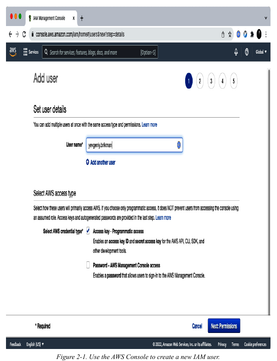
دوس على زرار Next. AWS هيطلب منك تضيف permissions للـ user ده. بشكل افتراضي، الـ IAM users الجداد مش بيكون عندهم أي permissions خالص ومش بيقدروا يعملوا أي حاجة في الـ AWS account. عشان تدي الـ IAM user بتاعك القدرة إنه يعمل حاجة، محتاج تربط IAM Policy واحدة أو أكتر بالـ account بتاع اليوزر ده. الـ IAM Policy دي عبارة عن ملف JSON بيحدد إيه اللي الـ user مسموح له يعمله وإيه اللي مش مسموح له يعمله. أنت ممكن تعمل IAM Policies خاصة بيك، أو تستخدم شوية من الـ IAM Policies اللي متعرفة أصلًا وموجودة في الـ AWS account بتاعك، ودي معروفة باسم Managed Policies.
عشان تشغل الأمثلة اللي في الكتاب ده، أسهل طريقة تبدأ بيها هي إنك تضيف الـ Managed Policy اللي اسمها AdministratorAccess للـ IAM user بتاعك (اعمل search عليها، ودوس على الـ checkbox اللي جنبها)، زي ما هو واضح في شكل 2-2.
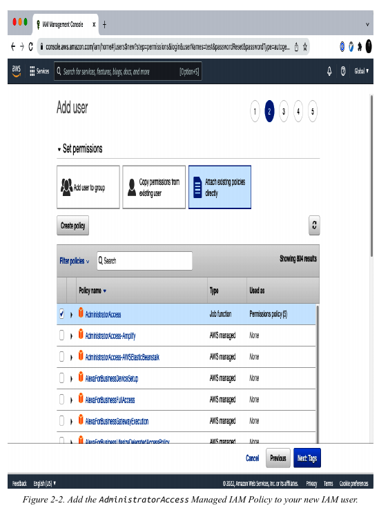
دوس على Next كام مرة كمان وبعد كده على زرار “Create user”. AWS هيوريك الـ security credentials بتاعة اليوزر ده، واللي هي عبارة عن Access Key ID و Secret Access Key، زي ما هو واضح في شكل 2-3. لازم تسيفهم حالًا عشان هما مش هيظهروا تاني أبدًا، وهتحتاجهم بعدين في الـ tutorial ده. خد بالك إن الـ credentials دي بتديك access على الـ AWS account بتاعك، عشان كده خزّنهم في مكان آمن (زي password manager زي 1Password، LastPass، أو macOS Keychain)، وأوعى تشاركهم مع أي حد.
بعد ما تسيف الـ credentials بتاعتك، دوس على زرار Close. كده أنت جاهز تبدأ تستخدم Terraform.
ملحوظة بخصوص الـ
Default Virtual Private Cloudsكل أمثلة
AWSفي الكتاب ده بتستخدم الـDefault VPCاللي في الـAWS accountبتاعك. الـVPC، أوvirtual private cloud، هي منطقة معزولة في الـAWS accountبتاعك ليها شبكة افتراضية (virtual network) وIP addressخاصة بيها. تقريبًا كلAWS resourceبيتعملهdeployجوهVPC. لو محددتشVPCبشكل صريح، الـresourceهيتعملهdeployفي الـDefault VPC، اللي هو جزء من أيAWS accountاتعمل بعد 2013. لو لأي سبب مسحت الـDefault VPCاللي في الـaccountبتاعك، يا إما تستخدمregionتانية (كلregionليهاDefault VPCخاصة بيها) أو تعملDefault VPCجديد باستخدام الـAWS Web Console. غير كده، هتحتاج تعدل تقريبًا كل مثال عشان تضيفparameterاسمهvpc_idأوsubnet_idبيشاور علىcustom VPC.
تسطيب Terraform
أسهل طريقة عشان تسطب Terraform هي إنك تستخدم الـ package manager بتاع نظام التشغيل بتاعك. على سبيل المثال، على macOS، لو أنت بتستخدم Homebrew، ممكن تشغل التالي:
$ brew tap hashicorp/tap$ brew install hashicorp/tap/terraformعلى Windows، لو أنت بتستخدم Chocolatey، ممكن تشغل التالي:
xxxxxxxxxx$ choco install terraformبص على الـ documentation بتاع Terraform عشان تشوف تعليمات التسطيب على أنظمة التشغيل التانية، واللي منها الأنواع المختلفة من Linux.
أو كحل بديل، ممكن تسطب Terraform يدويًا بإنك تروح على الصفحة الرئيسية بتاعة Terraform، وتدوس على لينك التحميل، وتختار الـ package المناسب لنظام التشغيل بتاعك، وتنزل الـ ZIP archive، وتفكه في الـ directory اللي عايز تسطب Terraform فيه. الأرشيف هيفك binary واحد اسمه terraform، واللي هتبقى عايز تضيفه للـ PATH environment variable بتاعك.
عشان تتأكد إن الدنيا شغالة، شغل الـ command بتاع terraform، والمفروض تشوف تعليمات الاستخدام:
x$ terraformUsage: terraform [global options] <subcommand> [args]The available commands for execution are listed below.The primary workflow commands are given first, followed byless common or more advanced commands.Main commands:init Prepare your working directory for other commandsvalidate Check whether the configuration is validplan Show changes required by the current configurationapply Create or update infrastructuredestroy Destroy previously-created infrastructure(...)
عشان Terraform يقدر يعمل تغييرات في الـ AWS account بتاعك، هتحتاج تظبط (set) الـ AWS credentials بتاعة الـ IAM user اللي عملته قبل كده كـ environment variables اللي هما AWS_ACCESS_KEY_ID و AWS_SECRET_ACCESS_KEY.
على سبيل المثال، ده إزاي ممكن تعمله في terminal بتاع Unix/Linux/macOS:
xxxxxxxxxx$ export AWS_ACCESS_KEY_ID=(your access key id)$ export AWS_SECRET_ACCESS_KEY=(your secret access key)وده إزاي ممكن تعمله في command terminal بتاع Windows:
xxxxxxxxxx$ set AWS_ACCESS_KEY_ID=(your access key id)$ set AWS_SECRET_ACCESS_KEY=(your secret access key)خد بالك إن الـ environment variables دي بتتطبق بس على الـ shell الحالية، فعشان كده لو عملت reboot لجهازك أو فتحت terminal window جديدة، هتحتاج تعمل export للـ variables دي تاني.
Important
تمام، خلينا نفصّص حتة الـ authentication دي أكتر، لأن طريقة الـ environment variables اللي شرحناها بتنفع لو شغال لوحدك على جهازك وبتجرب، لكن في الشغل الحقيقي ومع فريق، أو لما الكود بتاعك يشتغل على server، هتحتاج طرق أنضف وأكتر أمانًا.
Terraform، زيه زي أي أداة بتتعامل مع AWS، ذكي كفاية إنه بيدور على الـ credentials بتاعتك في كذا مكان بالترتيب. لو لقاها في مكان، بيستخدمها ويكمل. الأماكن دي هي:
الـ
Credentialsفي كود الـProviderنفسه (لا يُنصح بها أبدًا!): ممكن تكتب الـ keys جوه ملف الـ.tf، بس دي أسوأ طريقة ممكنة لأنك كده بتنشر Credentials في الـcodeوأي حد معاهaccessعلى الـcodeهيشوفها. أوعى تعمل كده.Environment Variables(اللي لسة شارحينها):Terraformبيبص علىAWS_ACCESS_KEY_IDوAWS_SECRET_ACCESS_KEY. دي طريقة سريعة للتجارب على جهازك.
لو ملقاش دول، بيروح يدور على الطريقتين اللي جايين دول، وهما الأهم والأكتر استخدامًا في الشغل:
الطريقة الأولى: ملف الـ Credentials (The Credentials File)
دي الطريقة المفضلة للشغل على جهازك (local machine).
إيه هو؟ ده ملف نصي بسيط اسمه
credentialsبيتحط جوه فولدر اسمه.awsفي الـhome directoryبتاعك (يعني المسار بيبقى~/.aws/credentialsعلى Linux/macOS أوC:\Users\YOUR_USERNAME\.aws\credentialsعلى Windows). الملف ده عامل زي "دفتر" بتسجل فيه الـkeysبتاعة كل الـAWS accountsاللي بتتعامل معاها.بيشتغل إزاي؟ أسهل طريقة تعمله هي إنك تسطب الـ
AWS CLIوتشغل أمر واحد:xxxxxxxxxxaws configureالأمر ده هيسألك على الـ
Access Key ID، والـSecret Access Key، والـDefault region، والـDefault output format. هو لوحده هيعمل الفولدر والملف ويكتب فيهم الـcredentialsبتاعتك. شكل الملف من جوه بيبقى كده:xxxxxxxxxx[default]aws_access_key_id = AKIAIOSFODNN7EXAMPLEaws_secret_access_key = wJalrXUtnFEMI/K7MDENG/bPxRfiCYEXAMPLEKEYTerraformأوتوماتيكيًا بيروح يقرأ من الـprofileاللي اسمه[default]في الملف ده لو ملقاشenvironment variables.الميزة الكبيرة: الـ
Profilesلو بتشتغل على أكتر منaccount(مثلًاdevelopmentوproduction)، تقدر تعملprofilesمختلفة جوه نفس الملف:xxxxxxxxxx[default]aws_access_key_id = ...aws_secret_access_key = ...[prod]aws_access_key_id = AKIA...aws_secret_access_key = ZZZZ...وبعدين في كود
Terraformبتاعك، تقدر تقوله يستخدم أنهيprofile:
xxxxxxxxxxprovider "aws" {region = "us-east-1"profile = "prod"}
دي طريقة أنضف وأكتر تنظيمًا بكتير من الـ environment variables.
الطريقة الثانية: الـ IAM Roles (الأكثر أمانًا والأفضل للـ Servers)
دي هي الـ best practice والأكتر أمانًا، وخصوصًا لما كود Terraform بتاعك بيشتغل من على resource جوه AWS نفسها، زي EC2 instance أو CI/CD pipeline.
إيه هي؟ فكر فيها كده: بدل ما تخزن
keysثابتة على الـserver(ولو الـserverاتعملهhackالـkeysتتسرق)، أنت بتدي للـserverنفسه "هوية" أوpermissionإنه ياخدcredentialsمؤقتة وصلاحيتها بتنتهي بعد فترة قصيرة (زي ساعة مثلًا).بتشتغل إزاي؟
بتروح على
IAMفيAWSوتعملIAM Role.بتدي للـ
Roleده الـpermissionsاللي محتاجها (مثلًا، يقدر يعملEC2 instancesويمسحها).أهم خطوة، بتعمل "Trust Relationship"، يعني بتقول مين مسموح له ياخد الـ
Roleده. في حالتنا، بتقول إن خدمةEC2مسموح لها تاخده.لما تيجي تعمل
launchللـEC2 instanceاللي هتشغل عليهTerraform، بتربط الـIAM Roleده بالـinstance.السحر بيحصل هنا: الـ
instanceدي أوتوماتيكيًا بتاخدcredentialsمؤقتة وصلاحيتها بتتجدد لوحدها.Terraform(وأيAWS SDK) لما بيشتغل على الـinstanceدي، بيكلم خدمة داخلية اسمهاEC2 Metadata Serviceوياخد منها الـcredentialsالمؤقتة دي ويستخدمها.
ليه دي أفضل طريقة؟
أمان مطلق: مفيش أي
long-lived keysمتخزنة على الـserverأبدًا. لو الـserverاتسرق، المهاجم مش هيلاقيkeysيستخدمها.صلاحيات مؤقتة: الـ
credentialsبتنتهي صلاحيتها وبتتجدد أوتوماتيك، فبتقلل الخطر جدًا.إدارة مركزية: كل الصلاحيات بتتحكم فيها من مكان واحد وهو الـ
IAM Role، وتقدر تعدلها في أي وقت من غير ما تلمس الـserver.
Deploy لـ single server
كود Terraform بيتكتب بلغة اسمها HashiCorp Configuration Language أو (HCL)، في فايلات الـ extension بتاعها .tf. هي لغة declarative ، فهدفك هو إنك توصف الـ infrastructure اللي أنت عايزها، وTerraform هو اللي هيعرف إزاي يعملها. Terraform يقدر يعمل infrastructure على منصات كتير مختلفة، أو اللي هو بيسميها providers، زي AWS, Azure, Google Cloud, DigitalOcean، وغيرهم كتير.
تقدر تكتب كود Terraform في أي text editor تقريبًا. لو دورت شوية، هتلاقي syntax highlighting support لـ Terraform لمعظم الـ editors (خد بالك إنك ممكن تحتاج تدور على كلمة HCL بدل Terraform)، ومنهم vim, emacs, Sublime Text, Atom, Visual Studio Code, وIntelliJ (الأخير ده حتى فيه دعم للـ refactoring, find usages, و go to declaration).
أول خطوة عشان تستخدم Terraform هي عادةً إنك تعمل configure للـ provider(s) اللي عايز تستخدمهم. اعمل فولدر فاضي وحط فيه ملف اسمه main.tf فيه المحتوى ده:
xxxxxxxxxxprovider "aws" { region = "us-east-2"}ده بيقول لـ Terraform إنك هتستخدم AWS كـ provider بتاعك، وإنك عايز تعمل deploy للـ infrastructure بتاعتك في region اسمها us-east-2. AWS عندها datacenters في كل حتة في العالم، متجمعة في regions. الـ AWS region هي منطقة جغرافية منفصلة، زي us-east-2 (Ohio)
، eu-west-1 (Ireland)، و ap-southeast-2 (Sydney). وجوه كل region، فيه datacenters معزولة كتير معروفة باسم Availability Zones (AZs)، زي us-east-2a, us-east-2b، وهكذا. فيه إعدادات تانية كتير ممكن تعملها configure على الـ provider ده، بس دلوقتي خلينا نبسط الموضوع، وهنبص على الـ provider configuration بتعمق أكتر في الفصل السابع.
لكل نوع provider، فيه أنواع resources مختلفة كتير ممكن تعملها، زي servers, databases, و load balancers. الـ syntax العام عشان تعمل resource في Terraform هو ده:
xxxxxxxxxxresource "<PROVIDER>_<TYPE>" "<NAME>" { [CONFIG ...]}
حيث PROVIDER هو اسم الـ provider (زي aws)، و TYPE هو نوع الـ resource اللي عايز تعمله في الـ provider ده (زي instance)، و NAME هو identifier تقدر تستخدمه في كل كود Terraform عشان تشاور على الـ resource ده (زي my_instance)، و CONFIG عبارة عن argument أو أكتر خاصين بالـ resource ده.
Important
ملحوظة ازاي اعمل call لمثلا id بتاع resource معين داخل resource ثاني مثلا او output زي ماهنشوف لسه انت بتناديه زي "
xxxxxxxxxxresource "aws_instance" "example" {ami = "ami-0fb653ca2d3203ac1"instance_type = "t2.micro"}
xxxxxxxxxxaws_instance.example.id
وهكذا
على سبيل المثال، عشان تعمل deploy لـ server واحد في AWS، اللي معروف باسم EC2 Instance، استخدم الـ resource اللي اسمه aws_instance في main.tf بالشكل ده:
xxxxxxxxxxresource "aws_instance" "example" { ami = "ami-0fb653ca2d3203ac1" instance_type = "t2.micro"}xxxxxxxxxxprovider "aws" { region = "eu-west-1"
}
resource "aws_vpc" "main_vpc" { cidr_block = "10.0.0.0/16" enable_dns_support = true enable_dns_hostnames = true tags = { Name = "my-vpc" }}
resource "aws_subnet" "public_subnet" { vpc_id = aws_vpc.main_vpc.id cidr_block = "10.0.1.0/24" availability_zone = "eu-west-1a" map_public_ip_on_launch = true tags = { Name = "my-subnet" }}
data "aws_ami" "ami_latest" { most_recent = true owners = ["amazon"]
filter { name = "name" values = ["amzn2-ami-hvm-*-x86_64-gp2"] } }
resource "tls_private_key" "ec2_key" { algorithm = "RSA" rsa_bits = 2048
}resource "local_file" "ec2_key_pair" { content = tls_private_key.ec2_key.private_key_pem filename = "${path.module}/ec2_key.pem" }resource "aws_key_pair" "ec2_key_pair" { key_name = "my-ec2-key" public_key = tls_private_key.ec2_key.public_key_openssh tags = { Name = "my-ec2-key-pair" }}
resource "aws_security_group" "enable_ssh" { vpc_id = aws_vpc.main_vpc.id name = "allow_ssh" description = "Allow SSH access" ingress { from_port = 22 to_port = 22 protocol = "tcp" cidr_blocks = ["0.0.0.0/0"] }
egress { from_port = 0 to_port = 0 protocol = "-1" cidr_blocks = ["0.0.0.0/0"] }}
resource "aws_instance" "ec2" { ami = data.aws_ami.ami_latest.id instance_type = "t2.micro" subnet_id = aws_subnet.public_subnet.id associate_public_ip_address = true key_name = aws_key_pair.ec2_key_pair.key_name vpc_security_group_ids = [aws_security_group.enable_ssh.id] tags = { Name = "my-ec2-instance" } }
resource "aws_internet_gateway" "main_igw" { vpc_id = aws_vpc.main_vpc.id tags = { Name = "my-vpc-igw" }}
resource "aws_route_table" "public_route_table" { vpc_id = aws_vpc.main_vpc.id
route { cidr_block = "0.0.0.0/0" gateway_id = aws_internet_gateway.main_igw.id }
tags = { Name = "my-public-route-table" }}
resource "aws_route_table_association" "public_subnet_association" { subnet_id = aws_subnet.public_subnet.id route_table_id = aws_route_table.public_route_table.id}
الـ resource اللي اسمه aws_instance بيدعم arguments كتير، بس دلوقتي، أنت محتاج بس تظبط الاتنين المطلوبين:
amiالـAmazon Machine Image (AMI)اللي هتشتغل على الـEC2 Instance. ممكن تلاقيAMIsببلاش أو بفلوس في الـAWS Marketplaceأو تعمل الـAMIالخاصة بيك باستخدام أدوات زيPacker. الكود اللي فوق بيظبط الـami parameterعلى الـIDبتاعUbuntu 20.04 AMIفيus-east-2. الـAMIدي استخدامها مجاني. من فضلك خد بالك إن الـAMI IDsبتختلف في كلAWS region، فلو غيرت الـregion parameterلحاجة غيرus-east-2، هتحتاج تدور يدويًا على الـUbuntu AMI IDالمناسب للـregionدي، وتعمل لهcopyفي الـami parameter. في الفصل السابع، هتشوف إزاي تجيب الـAMI IDأوتوماتيكيًا بالكامل.instance_typeنوع الـEC2 Instanceاللي هتشغله. كل نوع من الـEC2 Instanceبيقدم كمية مختلفة من الـCPU,memory,disk space, وnetworking capacity. صفحة الـEC2 Instance Typesفيها كل الخيارات المتاحة. المثال اللي فات بيستخدمt2.micro، اللي فيهvirtual CPUواحد، و 1 جيجاmemory، وهو جزء من الـAWS Free Tier.
استخدم الـ
DOCS!
Terraformبيدعم عشرات الـproviders، وكل واحد فيهم بيدعم عشرات الـresources، وكلresourceليه عشرات الـarguments. مستحيل تفتكرهم كلهم. وأنت بتكتب كودTerraform، لازم تبص بانتظام على الـTerraform documentationعشان تشوف إيه الـresourcesالمتاحة وإزاي تستخدم كل واحدة. على سبيل المثال، ده الـdocumentationبتاع الـaws_instance resource. أنا بستخدمTerraformمن سنين ولسه ببص على الـdocsدي كذا مرة في اليوم!
في الـ terminal، ادخل على الفولدر اللي عملت فيه main.tf وشغل أمر terraform init:
xxxxxxxxxx$ terraform initInitializing the backend...Initializing provider plugins...- Reusing previous version of hashicorp/aws from the dependency lock file- Using hashicorp/aws v4.19.0 from the shared cache directoryTerraform has been successfully initialized!
الـ binary بتاع terraform فيه الوظائف الأساسية لـ Terraform، لكن مش بييجي معاه الكود بتاع أي provider من الـ providers (زي AWS Provider, Azure provider, GCP provider, إلخ)، فلما تبدأ لأول مرة تستخدم Terraform، لازم تشغل terraform init عشان تقول لـ Terraform يعمل scan للكود، ويشوف إيه الـ providers اللي بتستخدمها، وينزل الكود بتاعهم. بشكل افتراضي، الكود بتاع الـ provider بينزل في فولدر اسمه .terraform، وده الـ scratch directory بتاع Terraform (ممكن تحطه في .gitignore). Terraform كمان بيسجل معلومات عن كود الـ provider اللي نزله في ملف اسمه .terraform.lock.hcl (هتتعلم أكتر عن الملف ده في "Versioned Modules"). هتشوف استخدامات تانية لأمر init وفولدر .terraform في فصول جاية. دلوقتي، بس خد بالك إنك لازم تشغل init أي وقت بتبدأ فيه كود Terraform جديد، وإن آمن إنك تشغل init كذا مرة (الأمر idempotent).
Tip
خلينا نوضح دور ملف .terraform.lock.hcl
تخيل معايا السيناريو ده عشان نفهم المشكلة اللي الملف ده بيحلها:
السيناريو: فريق شغال من غير ملف الـ .lock
أنت (يوم الأحد): بتبدأ مشروع
Terraformجديد. في ملفmain.tfبتاعك، أنت قلت إنك عايز تستخدم الـAWS provider. لما بتشغلterraform init،Terraformبيروح على الإنترنت ويدور على أحدثversionمن الـAWS providerوينزلها. لنفترض إنها كانتversion 5.30.0. الدنيا عندك شغالة تمام.زميلك (يوم الأربعاء): زميلك بيعمل
pullللكود بتاعك (اللي مفيهوش ملف.lock). هو كمان بيشغلterraform init. في الوقت ده، شركةHashiCorpكانت نزلتversionجديدة من الـAWS provider، ولنفترض إنها5.31.0.Terraformعند زميلك هينزل الـversionالجديدة دي.الـ
CI/CD Server(يوم الجمعة): الـpipelineبتاعكم بيشتغل عشان يعملdeployأوتوماتيك. هو كمان بيعملinitمن الصفر. في الوقت ده، ممكن تكون نزلتversion 5.32.0!
إيه المشكلة هنا؟
المشكلة إنكم تلاتة بتشتغلوا على نفس الكود، بس كل واحد فيكم بيستخدم version مختلفة من "الأدوات" (الـ provider).
ده ممكن يسبب كوارث:
نتائج غير متوقعة: ممكن
version 5.31.0تكون غيرت سلوكresourceمعين بشكل بسيط. فالـplanاللي بيطلع عندك بقى مختلف عن الـplanاللي بيطلع عند زميلك، مع إنكم الاتنين بتستخدموا نفس الكود!أخطاء مفاجئة: ممكن
version 5.32.0تكون فيهاbreaking change(تغيير جذري مش متوافق مع اللي قبله). فجأة، الكود اللي كان شغال تمام عندك وعند زميلك، بقى بيديerrorعلى الـCI/CD serverومحدش فاهم ليه."شغالة على جهازي!": هترجعوا تاني لمشكلة الـ
DevOpsالكلاسيكية دي.
الحل: دور وأهمية ملف .terraform.lock.hcl
ملف الـ lock هو "القفل" اللي الفريق كله والـ automation بيمشوا عليه. هو اللي بيضمن إن كل الناس بتستخدم نفس الـ version بالظبط من كل provider.
بيشتغل إزاي؟
أول مرة بتشغل
init:Terraformبيشوف إيه الـprovidersاللي أنت محتاجها، بينزل أحدثversionمتوافقة، وبعدين بيسجل الـversionدي بالظبط في ملف.terraform.lock.hcl. مش بس بيسجل رقم الـversion، ده كمان بيسجل حاجة اسمهاhash(digital signature ) عشان يتأكد إن الملف اللي نزله هو الملف الأصلي ومحدش لعب فيه. شكل الملف من جوه بيبقى حاجة زي كده:
xxxxxxxxxx# This file is maintained automatically by "terraform init".# Manual edits may be lost in future updates.provider "registry.terraform.io/hashicorp/aws" {version = "5.30.0"constraints = ">= 5.30.0"hashes = ["h1:Abc...","h1:Xyz...",]}
بتعمل
commitللملف ده فيGit: دي أهم خطوة. أنت كده بتشارك "الاتفاق" ده مع باقي الفريق.لما زميلك أو الـ
CI/CDبيشغلinit:Terraformأول حاجة بيبص عليها هو ملف.terraform.lock.hcl. لو لقاه، مش بيروح يدور على أحدثversionولا حاجة. هو بيقول: "تمام، الفريق اتفق إنه هيستخدمAWS provider version 5.30.0. أنا هنزل النسخة دي بالظبط."
أهميته في 3 نقط
(
Consistency & Predictability): بيضمن إن كل أعضاء الفريق وكل الـautomation pipelinesبيستخدموا نفس نسخة الـproviderبالمللي. ده معناه إن الـplanاللي بيطلع عندك هو نفسه اللي هيطلع عند أي حد تاني.منع المفاجآت (
Preventing Unexpected Changes): بيحميك من إنupdateجديد فيproviderمعين يبوظلك الدنيا فجأة من غير ما تاخد بالك. لو عايز تعملupgradeللـprovider، بتعمله بشكل واعي ومقصود (عن طريق أمرterraform init -upgrade).الأمان (
Security): الـhashesاللي جوه الملف بتتأكد إن الـproviderالليTerraformبينزله هو نفسه الليHashiCorpعملتلهrelease، ومفيش أي طرف في النص غيره أو inject فيه كود خبيث (man-in-the-middle attack).
عشان كده، القاعدة الذهبية هي: ملف .terraform.lock.hcl لازم دايمًايتعمله commit في الـ version control مع باقي ملفات الكود بتاعتك. هو جزء لا يتجزأ من الكود بتاعك زيه زي ملف main.tf بالظبط.
دلوقتي بعد ما نزلت كود الـ provider، شغل أمر terraform plan:
Important
المثل على قد ما هو تافه بس كل مثلا الكتاب هيطبقة انا عمله
xxxxxxxxxx$ terraform plan(...)Terraform will perform the following actions:# aws_instance.example will be created+ resource "aws_instance" "example" {+ ami = "ami-0fb653ca2d3203ac1"+ arn = (known after apply)+ associate_public_ip_address = (known after apply)+ availability_zone = (known after apply)+ cpu_core_count = (known after apply)+ cpu_threads_per_core = (known after apply)+ get_password_data = false+ host_id = (known after apply)+ id = (known after apply)+ instance_state = (known after apply)+ instance_type = "t2.micro"+ ipv6_address_count = (known after apply)+ ipv6_addresses = (known after apply)+ key_name = (known after apply)(...)}Plan: 1 to add, 0 to change, 0 to destroy.
أمر plan بيخليك تشوف Terraform هيعمل إيه قبل ما يعمل أي تغييرات فعلًا. دي طريقة ممتازة عشان تعمل sanity-check للكود بتاعك قبل ما تطلقه على العالم. الـ output بتاع أمر plan شبه الـ output بتاع أمر diff اللي هو جزء من Unix, Linux, و git: أي حاجة جنبها علامة زائد (+) هتتعمل، أي حاجة جنبها علامة ناقص (–) هتتمسح، وأي حاجة جنبها علامة التيلدا (~) هتتعدل in place.
في الـ output اللي فات، تقدر تشوف إن Terraform بيخطط إنه يعمل EC2 Instance واحد ومفيش حاجة تانية، وده بالظبط اللي أنت عايزه.
عشان تعمل الـ Instance فعلًا، شغل أمر terraform apply:
xxxxxxxxxx$ terraform apply(...)Plan: 1 to add, 0 to change, 0 to destroy.Do you want to perform these actions?Terraform will perform the actions described above.Only 'yes' will be accepted to approve.Enter a value:
هتلاحظ إن أمر apply بيوريك نفس الـ plan output وبيطلب منك تأكيد إذا كنت عايز فعلًا تكمل في الـ plan دي. فعشان كده، مع إن plan متاح كأمر منفصل، هو مفيد بشكل أساسي للـ sanity checks السريعة وأثناء الـ code reviews (وده موضوع هتشوفه أكتر في الفصل العاشر)، وفي معظم الوقت أنت هتشغل apply مباشرة وتراجع الـ plan output اللي هو بيوريهولك.
اكتب yes ودوس Enter عشان تعمل deploy للـ EC2 Instance:
xxxxxxxxxxDo you want to perform these actions?Terraform will perform the actions described above.Only 'yes' will be accepted to approve.Enter a value: yesaws_instance.example: Creating...aws_instance.example: Still creating... [10s elapsed]aws_instance.example: Still creating... [20s elapsed]aws_instance.example: Still creating... [30s elapsed]aws_instance.example: Creation complete after 38s [id=i-07e2a3e006d785906]Apply complete! Resources: 1 added, 0 changed, 0 destroyed.
مبروك! أنت لسة عامل deploy لـ EC2 Instance في الـ AWS account بتاعك باستخدام Terraform! عشان تتأكد، روح على الـ EC2 console والمفروض تشوف...
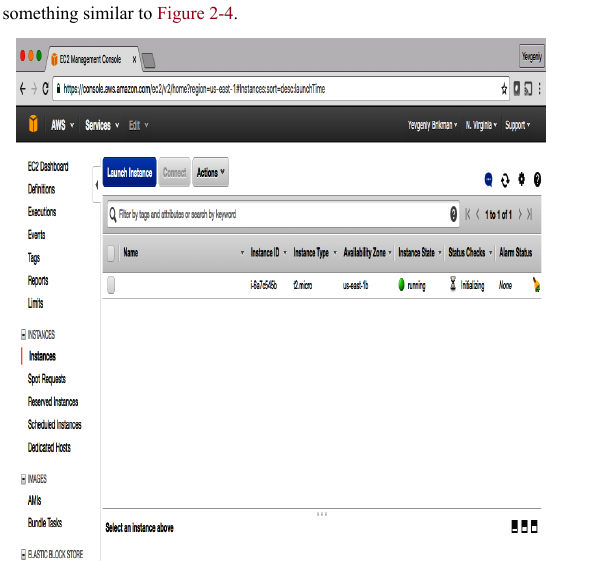
وفعلًا، الـ Instance موجودة، بس بصراحة، المثال ده مش ممتع أوي. يلا نخليه أحسن شوية. أولًا، خد بالك إن الـ EC2 Instance معلهاش اسم. عشان تضيفلها اسم، تقدر تضيف tags للـ resource اللي اسمه aws_instance:
xxxxxxxxxxresource "aws_instance" "example" { ami = "ami-0fb653ca2d3203ac1" instance_type = "t2.micro"
tags = { Name = "terraform-example" }}شغل terraform apply تاني عشان تشوف ده هيعمل إيه:
xxxxxxxxxx$ terraform applyaws_instance.example: Refreshing state...(...)Terraform will perform the following actions:
# aws_instance.example will be updated in-place ~ resource "aws_instance" "example" { ami = "ami-0fb653ca2d3203ac1" availability_zone = "us-east-2b" instance_state = "running" (...) + tags = { + "Name" = "terraform-example" } (...) }
Plan: 0 to add, 1 to change, 0 to destroy.
Do you want to perform these actions? Terraform will perform the actions described above. Only 'yes' will be accepted to approve.
Enter a value:تيرافورم عنده ملف مهم جدًا اسمه الـ State File، ده يعتبر الخريطة بتاعته اللي بتربط بين الكود اللي انت كاتبه والـ resources الحقيقية اللي بناها في الكلاود، كل حاجة بيعملها بيجري يسجلها في الخريطة دي عشان يبقى عارف إن الـ resource ده تبعه وهو المسؤول عنه. فلما بتيجي تشغل أمر apply تاني، هو مش بيبدأ من الصفر، لأ ده بيمسك الخريطة بتاعته الأول ويكلّم الكلاود عشان يتأكد إن كل حاجة متسجلة عنده لسه على أرض الواقع ومحدش غير فيها حاجة، ودي هي خطوة Refreshing state… اللي بتشوفها. بعد ما بيطمن، بيعمل المقارنة المهمة، بيشوف إيه اللي انت عايزه في الكود، وإيه اللي موجود فعلًا على الكلاود، والفرق اللي بيطلعه ده هو "Terraform Plan" اللي بيعرضها عليك. في الحالة بتاعتك، هو لقى الـ Instance موجودة فعلًا عشان هي متسجلة في الخريطة بتاعته، بس ناقصها الـ Tag بتاع Name اللي انت لسه ضايفه في الكود، عشان كده Terraform Plan بتاعته كانت ذكية جدًا ومقتصرة على إنه هيزود الـ Tag ده بس، مش هيهد حاجة ويبنيها من جديد، ودي هي قوة تيرافورم، انت بتوصفله الشكل النهائي اللي عايزه وهو بيتصرف ويوصلك ليه بأقل مجهود وتغيير ممكن، فلما قالك هزودلك الـ Tag بس، هو كده عمل الصح، تكتب yes وإنت متطمن.
لما تعمل refresh للـ EC2 console بتاعتك، هتشوف حاجة شبه شكل 2-5.
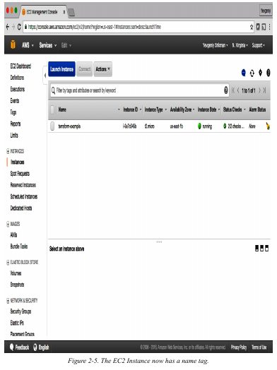
دلوقتي بعد ما بقى عندك شوية كود Terraform شغال، هتبقى عايز تخزنه في version control. ده بيسمحلك إنك تشارك الـ code بتاعك مع باقي أعضاء الفريق، وتتتبع تاريخ كل تغييرات الـ infrastructure، وتستخدم الـ commit log عشان تعمل debugging. على سبيل المثال، ده إزاي ممكن تعمل Git repository local) وتستخدمه عشان تخزن ملف الـ Terraform configuration بتاعك وملف الـ lock (هتتعلم كل حاجة عن ملف الـ lock في الفصل التامن (Chapter 8)؛ دلوقتي، كل اللي محتاج تعرفه هو إنه لازم يتضاف للـ version control مع الكود بتاعك):
xxxxxxxxxxgit initgit add main.tf .terraform.lock.hclgit commit -m "Initial commit"المفروض كمان تعمل ملف .gitignore بالمحتويات دي:
xxxxxxxxxx.terraform*.tfstate*.tfstate.backup
ملف الـ .gitignore اللي فوق ده بيدي تعليمات لـ Git إنه يعمل ignore لفولدر .terraform، اللي Terraform بيستخدمه كـ scratch directory مؤقت، وكمان ملفات الـ *.tfstate، اللي Terraform بيستخدمها عشان يخزن الـ state (في الفصل التالت (Chapter 3)، هتشوف ليه ملفات الـ state المفروض متتحطش في الـ version control). المفروض تعمل commit لملف الـ .gitignore هو كمان:
xxxxxxxxxxgit add .gitignoregit commit -m "Add a .gitignore file"عشان تشارك الكود ده مع زمايلك في الفريق، هتبقى عايز تعمل Git repository مشترك تقدروا كلكم توصلوا له. طريقة عشان تعمل ده هي إنك تستخدم GitHub. روح على GitHub، اعمل account لو معندكش واحد، واعمل repository جديد. اعمل configure للـ Git repository المحلي بتاعك عشان يستخدم الـ GitHub repository الجديد كـ remote endpoint اسمه origin، بالشكل ده:
xxxxxxxxxxgit remote add origin git@github.com:<YOUR_USERNAME>/<YOUR_REPO_NAME>.gitدلوقتي، أي وقت تحب تشارك الـ commits بتاعتك مع زمايلك، تقدر تعملهم push على origin:
xxxxxxxxxxgit push origin mainوأي وقت تحب تشوف التغييرات اللي زمايلك عملوها، تقدر تعملهم pull من origin:
xxxxxxxxxxgit pull origin mainوأنت ماشي في باقي الكتاب، وأنت بتستخدم Terraform عمومًا، اتأكد إنك بتعمل git commit و git push للتغييرات بتاعتك بانتظام. بالطريقة دي، مش بس هتقدر تتعاون مع أعضاء الفريق على الكود ده، لكن كمان كل تغييرات الـ infrastructure بتاعتك هتكون متسجلة في الـ commit log، ودي حاجة مفيدة جدًا للـ debugging. هتتعلم أكتر عن استخدام Terraform كفريق في الفصل العاشر (Chapter 10).
Deploy لـ single web server
الخطوة الجاية هي إننا نشغّل web server على الـ Instance دي. الهدف هو إننا نعمل deploy لأبسط web architecture ممكنة: web server واحد يقدر يستجيب لطلبات الـ HTTP، زي ما هو واضح في شكل 2-6.
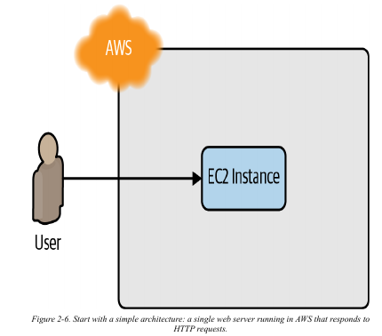
في حالة استخدام حقيقية في الشغل (real-world use case)، أنت غالبًا هتبني الـ web server باستخدام web framework زي Ruby on Rails أو Django، بس عشان نخلي المثال ده بسيط، يلا نشغل web server بسيط جدًا (dirt-simple) بيرجع دايمًا نص "Hello, World":
xxxxxxxxxxecho "Hello, World" > index.xhtmlnohup busybox httpd -f -p 8080 &ده Bash script بيكتب نص "Hello, World" في ملف اسمه index.xhtml وبيشغل أداة اسمها busybox (ودي بتبقى نازلة أصلًا على Ubuntu) عشان يقوّم web server على port 8080 عشان يعرض الملف ده. أنا حطيت الأمر بتاع busybox مع nohup وعلامة الأمبرساند (&) عشان الـ web server يفضل شغال في الخلفية على طول، في حين إن الـ Bash script نفسه يقدر يقفل.
أرقام البورتات (
PORT NUMBERS)السبب إن المثال ده بيستخدم
port 8080، بدلport 80الافتراضي بتاع الـHTTP، هو إنك عشان "listen" على أيportرقمه أقل من 1024، بتبقى محتاج صلاحياتroot user(صلاحيات المدير). دي تعتبر مخاطرة أمنية لأن أيattackerهيقدر يخترق السيرفر بتاعك هياخد صلاحيات الـrootهو كمان.عشان كده، الـ
best practiceهي إنك تشغل الـweb serverبتاعك بـuserعادي مشrootليه صلاحيات محدودة. ده معناه إنك لازم تستخدمportsأرقامها أعلى، بس زي ما هتشوف بعدين في الفصل ده، أنت ممكن تظبطload balancerيستقبل الـtrafficعلىport 80ويوجهه للـportsالعالية على السيرفرات بتاعتك.
طب إزاي تخلي الـ EC2 Instance تشغل الـ script ده؟ في العادي، زي ما اتناقشنا في "أدوات الـ Server Templating"، أنت هتستخدم أداة زي Packer عشان تعمل AMI مخصوصة يكون الـ web server متسطب عليها. بما إن الـ web server الأهبل اللي في المثال ده هو مجرد سطر واحد بيستخدم busybox، أنت ممكن تستخدم AMI بتاعة Ubuntu 20.04 العادية وتشغل الـ script بتاع "Hello, World" كجزء من configuration اسمه User Data بتاع الـ EC2 Instance. لما بتشغل EC2 Instance، عندك اختيار إنك تمرر يا إما shell script أو cloud-init directive للـ User Data، والـ EC2 Instance هتنفذه في أول مرة بس بتقوم فيها (very first boot). أنت بتمرر shell script للـ User Data عن طريق إنك تظبط الـ argument اللي اسمه user_data في كود Terraform بتاعك بالشكل ده:
xxxxxxxxxxresource "aws_instance" "example" { ami = "ami-0fb653ca2d3203ac1" instance_type = "t2.micro" user_data_replace_on_change = true
tags = { Name = "terraform-example" } user_data = <<-EOF #!/bin/bash echo "Hello, World" > index.xhtml nohup busybox httpd -f -p 8080 & EOF
}
Tip
لما بتشغل سيرفر جديد على الكلاود (زي EC2 instance)، أنت محتاج تديله أوامر عشان يجهز نفسه. فيه طريقتين مشهورين تعمل بيهم كده في الـ User Data:
1. الـ Shell Script العادي
ده ببساطة إنك تكتب الأوامر اللي عايزها تتنفذ بالترتيب، واحد ورا التاني، زي ما بتكتبهم في الـ terminal بالظبط. هو بينفذ اللي بتقوله بالحرف. لو حصل error في أمر منهم، ممكن يوقف كل حاجة أو يكمل وهو مش فاهم فيبوظ حاجة تانية.
الأسلوب ده اسمه Imperative (أسلوب الأوامر): أنت بتقوله "إزاي" يعمل الحاجة خطوة بخطوة.
2. الـ cloud-init directive
ده مش مجرد أوامر ورا بعض. ده ملف configuration بصيغة YAML، متقسم لأقسام جاهزة (اسمها modules). بدل ما تكتب الأمر بنفسك، أنت بتحدد "إيه" اللي أنت عايزه في كل قسم، وهو بيتصرف.
مثلاً:
بدل ما تكتب
apt-get update، بتروح على قسمpackage_updateوتخليهtrue.بدل ما تكتب
apt-get install nginx، بتروح على قسمpackagesوتضيفnginxفي لستة.بدل ما تكتب
echo "..." > /path/to/file، بتروح على قسمwrite_filesوتحدد اسم الملف ومحتواه.بدل ما تكتب
systemctl restart my-service، بتروح على قسمruncmdوتحط الأمر ده.
الأسلوب ده اسمه Declarative: أنت بتوصف الحالة النهائية اللي عايز السيرفر يوصلها، وبتسيب cloud-init يوصلها بالطريقة الصح.
إيه هو cloud-init أصلًا؟
cloud-init ده برنامج بيكون متسطب جاهز على معظم صور الـ Linux الرسمية (الـ AMIs). وظيفته إنه أول ما السيرفر يقوم لأول مرة، يقرأ التعليمات اللي في الـ User Data وينفذها بذكاء.
ليه هو أذكى وأقوى من الـ Shell Script العادي؟
التنظيم والهيكلة: ملف
YAMLواضح ومتقسم، أسهل في القراية والصيانة منscriptطويل كله أوامر سايحة على بعض.إمكانيات مدمجة (
modules): بيقدم "وحدات" جاهزة بتعمل أشهر المهام من غير ما تكتب الكود بنفسك، زي:تسطيب برامج (
packages).تحديث النظام (
package_update,package_upgrade).إنشاء
usersوgroups.كتابة ملفات (
write_files).تغيير الـ
hostname.إضافة
SSH keys.تشغيل أوامر معينة (
runcmd).وحاجات تانية كتير.
الذكاء والـ
Idempotence: بعض الـmodulesبتاعته، لو شغلتها تاني بالغلط، بتشوف إن الشغل اتعمل خلاص ومبتعملش حاجة تانية. ده بيحميك من مشاكل ممكن تحصل لوscriptعادي اشتغل مرتين.
مثال عملي: الفرق بين الطريقتين
الطريقة الأولى: Shell Script في الـ User Data
xxxxxxxxxxuser_data = <<-EOF #!/bin/bash apt-get update -y apt-get upgrade -y apt-get install -y nginx git echo "<h1>Hello from my web server!</h1>" > /var/www/html/index.html systemctl start nginx systemctl enable nginx EOFشغال وزي الفل، بس سايح على بعضه.
**الطريقة الثانية: cloud-init directive
عشان تستخدمه، لازم تبدأ الـ User Data بتاعك بـ #cloud-config.
xxxxxxxxxxuser_data = <<-EOF#cloud-configpackage_update: truepackage_upgrade: truepackages:- nginx- gitwrite_files:- path: /var/www/html/index.htmlowner: root:rootpermissions: '0644'content: |<h1>Hello from my web server!</h1>runcmd:- [ systemctl, start, nginx ]- [ systemctl, enable, nginx ]EOF
شفت الفرق؟
الكود التاني (cloud-init) أكثر وضوحًا وتنظيمًا . أنت بتوصف اللي أنت عايزه (declarative) مش بتأمر بخطوات (imperative).
الـ cloud-init directive هي الطريقة الأحدث والأكثر احترافية وقوة عشان تجهز السيرفرات بتاعتك أول ما تقوم. بتديلك طريقة declarative منظمة باستخدام YAML، وده بيخلي المهام المعقدة أسهل في الكتابة والقراءة و maintance، بدل ما تكتب shell scripts طويلة ومعرضة للأخطاء.
حاجتين تاخد بالك منهم في الكود اللي فات:
الـ
<<-EOFوEOFدول طريقة كتابة فيTerraformاسمهاheredoc، ودي بتسمحلك تكتب كذا سطر ورا بعض من غير ما تحتاج تحط\nفي كل حتة.الـ
parameterاللي اسمهuser_data_replace_on_changeمتظبط علىtrueعشان لما تغير في الـuser_dataوتشغلapply،Terraformيهدم الـinstanceالأصلية ويبني واحدة جديدة تمامًا. السلوك الافتراضي بتاعTerraformهو إنه يحدث الـinstanceالأصلية في مكانها (in place)، بس بما إن الـUser Dataبيشتغل مرة واحدة بس في أولboot، والـinstanceبتاعتك الأصلية عدت بعملية الـbootدي خلاص، أنت محتاج تجبره يعملinstanceجديدة عشان تضمن إن الـUser Datascriptالجديد بتاعك يتنفذ فعلًا.
لسه فاضل حاجة واحدة تعملها قبل ما الـ web server ده يشتغل. بشكل افتراضي، AWS مش بتسمح بأي traffic داخل أو خارج من الـ EC2 Instance. عشان تسمح للـ EC2 Instance إنها تستقبل traffic على port 8080، أنت محتاج تعمل security group:
xxxxxxxxxxresource "aws_security_group" "instance" { name = "terraform-example-instance"
ingress { from_port = 8080 to_port = 8080 protocol = "tcp" cidr_blocks = ["0.0.0.0/0"] }}الجزء الأول: تعريف الـ Security Group وتحديد قواعده
الـ Security Group هو firewall افتراضي بيشتغل على مستوى الـ EC2 Instance عشان يتحكم في الـ traffic اللي داخل وخارج. الكود ده بيقوم بتعريف resource من النوع ده.
إنشاء الـ
resource:
xxxxxxxxxxresource "aws_security_group" "instance" { ... }
السطر ده بيعرف resource جديد من نوع aws_security_group داخل Terraform. الاسم instance هو اسم محلي بنستخدمه عشان نشاور على الـ resource ده في باقي الكود.
تحديد قواعد الـ
traffic: داخل الـblock{...}، بنحدد القواعد. في المثال ده، بنعرف قاعدة دخول (ingress):
cidr_blocks = ["0.0.0.0/0"]: دي بتحدد مصدر الـtrafficالمسموح به. القيمة0.0.0.0/0تعني "أيIP addressعلى الإنترنت".from_port = 8080وto_port = 8080: دي بتحدد الـportالمسموح باستقبال الـtrafficعليه.protocol = "tcp": دي بتحدد نوع البروتوكول المسموح به.
الجزء الثاني (الأهم): إزاي نربط الـ Security Group بالـ Instance؟
لغاية دلوقتي، الـ Security Group اللي اتعرف ده مجرد resource منفصل. هو مش مطبق على أي EC2 Instance بشكل تلقائي. لازم نعمل الربط ده بشكل صريح.
المشكلة: إزاي الـ aws_instance resource يعرف إنه المفروض يستخدم الـ Security Group اللي عملناه؟
ماينفعش نستخدم الاسم "instance"، لأن ده مجرد label جوه كود Terraform. الـ AWS API بيتطلب (unique identifier) للـ Security Group، وهو الـ ID بتاعه (اللي بيكون شكله sg-0123...).
الحل: استخدام الـ Resource Reference
Terraform بيوفر آلية اسمها Resource Reference بتخلي الـ resources تقدر توصل للـ attributes بتاعة بعضها بشكل ديناميكي.
صيغة الـ Reference بتكون كالتالي:
<RESOURCE_TYPE>.<LOCAL_NAME>.<ATTRIBUTE_NAME>
لما نطبق الصيغة دي على حالتنا:
RESOURCE_TYPE:aws_security_groupLOCAL_NAME:instanceATTRIBUTE_NAME:id
فالـ reference الكامل بيكون: aws_security_group.instance.id
السطر ده معناه: "يا Terraform، التعبير ده بيشير إلى الـ attribute اللي اسمه id والخاص بالـ resource اللي نوعه aws_security_group واسمه instance".
الجزء الثالث: التجميع النهائي
دلوقتي بنستخدم الـ reference ده جوه resource الـ aws_instance عشان نعمل الربط:
xxxxxxxxxxresource "aws_instance" "example" {
vpc_security_group_ids = [ aws_security_group.instance.id ]}
إيه اللي بيحصل هنا؟
vpc_security_group_ids: ده هو الـargumentفي الـaws_instanceresourceاللي بيستقبل لستة من الـIDsبتاعة الـSecurity Groupsاللي هتطبق على الـinstance.[...]: الأقواس دي بتدل على إننا بنمررlist، وده بيسمح بربط أكتر منSecurity Groupلو احتجنا.aws_security_group.instance.id: وقت التنفيذ،Terraformبيستبدل الـreferenceده بالقيمة الفعلية للـIDبتاع الـSecurity Groupبعد ما يتم إنشاؤه.
xxxxxxxxxxresource "aws_instance" "example" { ami = "ami-0fb653ca2d3203ac1" instance_type = "t2.micro" vpc_security_group_ids = [aws_security_group.instance.id] user_data_replace_on_change = true tags = { Name = "terraform-example" } user_data = <<-EOF #!/bin/bash echo "Hello, World" > index.xhtml nohup busybox httpd -f -p 8080 & EOF
}لما بتضيف reference من resource للتاني، أنت بتعمل implicit dependency (اعتمادية ضمنية). Terraform بيفهم الاعتماديات دي، ويبني منهم dependency graph ، ويستخدمها عشان يحدد أوتوماتيكيًا هيبني أنهي resource قبل التاني. على سبيل المثال، لو كنت بتعمل deploy للكود ده من الصفر، Terraform كان هيعرف إنه محتاج يعمل الـ security group قبل الـ EC2 Instance، لأن الـ EC2 Instance بتشاور على الـ ID بتاع الـ security group. أنت حتى ممكن تخلي Terraform يوريك خريطة الاعتماديات دي بإنك تشغل أمر graph:
xxxxxxxxxx$ terraform graphdigraph {compound = "true"newrank = "true"subgraph "root" {"[root] aws_instance.example" [label = "aws_instance.example", shape = "box"]"[root] aws_security_group.instance" [label = "aws_security_group.instance", shape = "box"]"[root] provider.aws" [label = "provider.aws", shape = "diamond"]"[root] aws_instance.example" -> "[root] aws_security_group.instance""[root] aws_security_group.instance" -> "[root] provider.aws""[root] meta.count-boundary (EachMode fixup)" -> "[root] aws_instance.example""[root] provider.aws (close)" -> "[root] aws_instance.example""[root] root" -> "[root] meta.count-boundary (EachMode fixup)""[root] root" -> "[root] provider.aws (close)"}}
الـ output بلغة رسوم بيانية اسمها DOT، اللي ممكن تحولها لصورة، شبه الـ dependency graph اللي في شكل 2-7، بإنك تستخدم برنامج ديسكتوب زي Graphviz أو موقع زي GraphvizOnline.
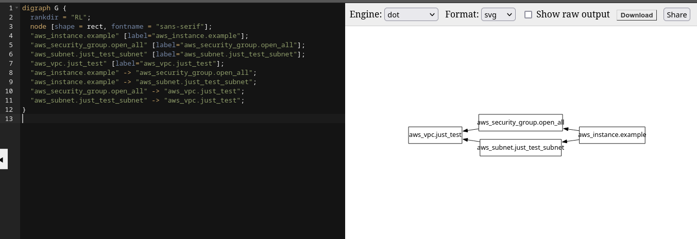
Warning
كان من المفترض ان object الخاص بـ security group يمرر ليه vpc هو نسي هنا
بس انا خدت باللي
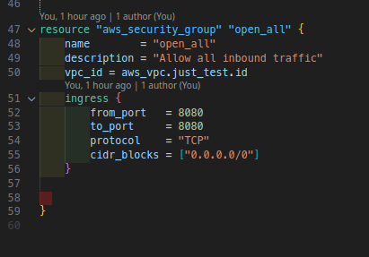
عشان تفهم إيه اللي بيحصل لما بتشغل terraform apply، لازم الأول تفهم إزاي Terraform بيفكر. Terraform مش بيقرأ الكود بتاعك سطر بسطر وينفذه بالترتيب زي الـ shell script العادي. بدل كده، هو بيعمل حاجة أذكى بكتير. أول خطوة بيعملها هي إنه بيبني خريطة لكل الـ resources اللي عندك وعلاقتها ببعض، الخريطة دي اسمها dependency graph
الخريطة دي بتتبني إزاي؟ بتتبني من خلال الـ references اللي أنت كاتبها في الكود. لما كتبت vpc_security_group_ids = [aws_security_group.instance.id]، أنت بكده قلت لـ Terraform صراحةً إن الـ aws_instance resource بيعتمد على وجود الـ aws_security_group resource. بمعنى تاني، الـ instance مش هينفع تتعمل إلا بعد ما الـ security group يتعمل الأول والـ ID بتاعه يكون متاح.
بمجرد ما Terraform يبني الـ dependency graph الكاملة دي، بيبتدي ينفذ. وهنا بتظهر قوته: أي resources مش معتمدة على أي حاجة تانية، Terraform بيقدر يبدأ في إنشائها كلها في نفس الوقت. العملية دي اسمها parallel execution . هو مش بيستنى حاجة تخلص عشان يبدأ في اللي بعدها إلا لو كانت معتمدة عليها بشكل مباشر. ده بيخلي عملية التنفيذ سريعة وفعالة جدًا.
كل ده ممكن يحصل لأن Terraform لغة declarative . أنت مش بتقوله "اعمل كذا، ثم اعمل كذا". أنت بتوصف له "الحالة النهائية" اللي أنت عايز توصلها، وهو اللي بيتولى مهمة التخطيط وتحديد أفضل وأسرع مسار للوصول للحالة دي بناءً على الـ dependency graph.
نيجي بقى للنقطة المهمة: لما تشغل أمر apply بعد ما تكون عملت تغيير في الكود. في حالتنا، أنت غيرت في الـ user_data. بسبب إنك كاتب السطر user_data_replace_on_change = true، أنت قايل لـ Terraform بشكل صريح: "أي تغيير في محتوى الـ user_data ده، بيتطلب استبدال الـ instance بالكامل".
ليه بيعمل استبدال (replace) ومش مجرد تعديل (update)؟ لأن AWS API نفسها ماعندهاش طريقة إنها "تعيد تشغيل" الـ user_data script على instance شغالة بالفعل. الـ user_data مصمم إنه يشتغل مرة واحدة بس عند أول boot. فالطريقة الوحيدة المضمونة عشان تطبق الـ script الجديد هي إنك تدمر الـ instance القديمة وتنشئ واحدة جديدة تمامًا بالـ script الجديد.
عشان كده، لما تشغل apply، Terraform هيقارن الحالة اللي أنت عايزها (في الكود) بالحالة الفعلية (اللي على AWS)، هيلاقي إن الـ user_data اتغير، وبناءً على القاعدة اللي أنت حاططها، هيقرر إن الحل هو الاستبدال. فالـ plan اللي هيعرضهولك هيقول إنه محتاج يعمل 1 to add, 1 to destroy، يعني هينشئ الـ instance الجديدة الأول، وبعد ما تشتغل ويتأكد إنها تمام، هيدمر القديمة. ده بيضمن إن الخدمة بتاعتك مايحصلش فيها انقطاع كبير. السلوك ده هو أساس مبدأ الـ Immutable Infrastructure اللي Terraform بيشجع عليه.
xxxxxxxxxx$ terraform apply(...)Terraform will perform the following actions:# aws_instance.example must be replaced-/+ resource "aws_instance" "example" {ami = "ami-0fb653ca2d3203ac1"~ availability_zone = "us-east-2c" -> (known after apply)~ instance_state = "running" -> (known after apply)instance_type = "t2.micro"(...)+ user_data = "c765373..." # forces replacement~ volume_tags = {} -> (known after apply)~ vpc_security_group_ids = [- "sg-871fa9ec",] -> (known after apply)(...)}# aws_security_group.instance will be created+ resource "aws_security_group" "instance" {+ arn = (known after apply)+ description = "Managed by Terraform"+ egress = (known after apply)+ id = (known after apply)+ ingress = [+ {+ cidr_blocks = [+ "0.0.0.0/0",]+ description = ""+ from_port = 8080+ ipv6_cidr_blocks = []+ prefix_list_ids = []+ protocol = "tcp"+ security_groups = []+ self = false+ to_port = 8080},]+ name = "terraform-example-instance"+ owner_id = (known after apply)+ revoke_rules_on_delete = false+ vpc_id = (known after apply)}Plan: 2 to add, 0 to change, 1 to destroy.Do you want to perform these actions?Terraform will perform the actions described above.Only 'yes' will be accepted to approve.Enter a value:
علامة - /+ في الـ plan output معناها "استبدال" (replace)؛ دور على جملة "forces replacement" في الـ output عشان تعرف إيه اللي بيجبر Terraform يعمل استبدال. بما إنك ظبطت user_data_replace_on_change على true وغيرت الـ user_data parameter، ده هيجبره يعمل replacement، وده معناه إن الـ EC2 Instance الأصلية هتتمسح (terminated) وواحدة جديدة تمامًا هتتعمل. ده مثال على مبدأ الـ immutable infrastructure اللي اتكلمنا عنه في "أدوات الـ Server Templating". ويستاهل نذكر إنه أثناء ما الـ web server بيتبدل، أي مستخدمين للسيرفر ده هيحصلهم downtime ؛ هتشوف إزاي تعمل zero-downtime deployment (يعني deploy من غير ما الخدمة تقع) بـ Terraform في الفصل الخامس.
بما إن الـ plan شكلها تمام، اكتب yes، وهتشوف الـ EC2 Instance الجديدة بتاعتك وهي بتتعمل، زي ما هو واضح في شكل 2-8.
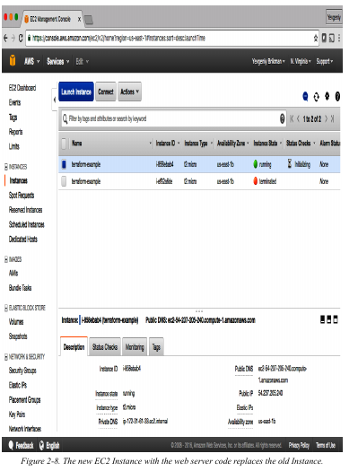
لو دوست على الـ Instance الجديدة بتاعتك، هتقدر تلاقي الـ public IP address بتاعها في لوحة الوصف (description panel) اللي تحت في الشاشة. ادي للـ Instance دقيقة أو دقيقتين عشان تقوم، وبعدين استخدم web browser أو أداة زي curl عشان تعمل HTTP request للـ IP address ده على port 8080:
xxxxxxxxxx$ curl http://<EC2_INSTANCE_PUBLIC_IP>:8080Hello, Worldيا سلام! كده بقى عندك web server شغال في AWS!
أمان الشبكة (
NETWORK SECURITY)عشان نخلي كل الأمثلة في الكتاب ده بسيطة، هي مش بس بتعمل
deployفي الـDefault VPCبتاعتك (زي ما ذكرنا قبل كده)، لكن كمان بتعملdeployفي الـdefault subnetsبتاعة الـVPCدي. الـVPCبتتقسم لواحد أو أكتر من الـsubnets، كل واحد ليه الـIP addressesالخاصة بيه. الـsubnetsاللي في الـDefault VPCكلهاpublic subnets، وده معناه إنها بتاخدIP addressesممكن الوصول ليها من الإنترنت العام. عشان كده أنت قادر تختبر الـEC2 Instanceبتاعتك من جهازك في البيت.إنك تشغل
serverفيpublic subnetده كويس كتجربة سريعة، بس في الاستخدام الحقيقي، ده بيعتبر مخاطرة أمنية. الـHackersفي كل حتة في العالم بيعملواscanعلىIP addressesبشكل عشوائي باستمرار عشان يدوروا على أي نقطة ضعف. لو السيرفرات بتاعتك مكشوفة للعامة، كل اللي محتاجه هو إنك تسيب بالغلطportواحد من غير حماية، أو تشغل كود قديم فيه ثغرة (vulnerability) معروفة، وحد يقدر يخترق ويدخل.
عشان كده، في أنظمة الـ
production، لازم تعملdeployلكل السيرفرات بتاعتك، وبالتأكيد كل الـdata storesبتاعتك، فيprivate subnets، اللي ليهاIP addressesلا يمكن الوصول ليها إلا من جوه الـVPCنفسها، ومش من الإنترنت العام. السيرفرات الوحيدة اللي المفروض تشغلها فيpublic subnetsهي عدد قليل من الـreverse proxiesوالـload balancersاللي بتقفلها وتأمّنها على قد ما تقدر (هتشوف مثال إزاي تعملdeployلـload balancerبعدين في الفصل ده).
Deploy لـ configurable web server
ممكن تكون خدت بالك إن كود الـ web server فيه port 8080 متكرر في الـ security group وفي الـ User Data configuration كمان. ده بيخالف مبدأ مهم جدًا اسمه Don’t Repeat Yourself (DRY) أو "لا تكرر نفسك": كل معلومة لازم يكون ليها مكان واحد بس واضح وموثوق فيه جوه السيستم. لو عندك رقم الـ port في مكانين، سهل جدًا إنك تعدله في مكان وتنسى تعدله في المكان التاني.
عشان يخليك تقدر تخلي الكود بتاعك DRY أكتر وقابل للتعديل (configurable)، Terraform بيسمحلك تعرّف input variables. دي طريقة تعريف متغير:
xxxxxxxxxxvariable "NAME" { [CONFIG ...]}جوه الـ variable declaration ممكن تحط الـ parameters الاختيارية دي:
descriptionدايمًا فكرة كويسة إنك تستخدم الـparameterده عشان توثق (document) المتغير ده بيستخدم في إيه. زمايلك في الفريق هيقدروا يشوفوا الوصف ده مش بس وهما بيقروا الكود، لكن كمان وهما بيشغلوا أوامرplanأوapply(هتشوف مثال على ده كمان شوية).defaultفيه كذا طريقة تدي بيها قيمة للمتغير، منها إنك تمررها وأنت بتشغل الأمر (using the -var option)، أو عن طريق ملف (using the -var-file option)، أو عن طريقenvironment variable(Terraformبيدور علىenvironment variablesبالاسم دهTF_VAR_<variable_name>). لو مفيش أي قيمة اتبعثت، المتغير هيستخدم القيمة الافتراضية (default value) دي. لو مفيش قيمة افتراضية،Terraformهيسأل المستخدم يدخل واحدة وهو شغال. هشرح بالتفصيل فى النقطة اللي بعدها ازاي المتغيرات بتتمرر فى Terraform
Note
إزاي Terraform بيلاقي قيمة للمتغير؟
لما بتعمل متغير في Terraform، هو بيبدأ رحلة بحث عن قيمته، وبيمشي بترتيب أولويات محدد جدًا عامل زي الهرم. هو بيبدأ من القمة، ولو ملقاش قيمة، بينزل للمستوى اللي بعده، وهكذا.
القمة (الأولوية القصوى): وأنت بتشغل الأمر مباشرةً
دي أقوى طريقة، وبتعمل override (بتتجاوز) أي طريقة تانية.
باستخدام
-var: بتقول لـTerraformبشكل صريح: "للأمر ده بالذات، استخدم القيمة دي".
xxxxxxxxxxterraform apply -var="server_port=9090"
باستخدام
-var-file: لو عندك متغيرات كتير، بتحطهم في ملف (مثلًاprod.tfvars) وتديه لـTerraform.
xxxxxxxxxx# جوه ملف prod.tfvars:# server_port = 80# instance_type = "t2.large"# في الـ terminal:terraform apply -var-file="prod.tfvars"
المستوى التاني: ملفات المتغيرات الأوتوماتيكية
لو Terraform ملقاش حاجة في الـ command line، بيروح يدور على ملفات بأسماء معينة ويقرأها أوتوماتيك.
ملف
terraform.tfvarsأوauto.tfvars.*: لو عملت ملف بالاسم ده وحطيت فيه قيم المتغيرات،Terraformهيقرأه لوحده من غير ما تقوله. دي الطريقة المفضلة عشان تحط قيم مختلفة لكلenvironment(زيdev,staging,prod).
المستوى التالت: Environment Variables
لو لسه ملقاش قيمة، بيبص على الـ environment variables بتاعة الـ shell اللي أنت فيها.
Terraformبيدور علىvariableاسمه بيبدأ بـTF_VAR_.xxxxxxxxxxexport TF_VAR_server_port=8080
xxxxxxxxxxterraform apply```دي طريقة مفيدة جدًا في الـ `CI/CD pipelines`.
المستوى الرابع: القيمة الـdefault في الكود (default)
لو عدى على كل اللي فات ده ولسه المتغير ملوش قيمة، بيروح يبص جوه الكود نفسه على بلوك الـ variable.
هل فيه
default؟ لو لقى قيمة الـdefault، بيستخدمها.
xxxxxxxxxxvariable "server_port" {description = "The port the server will use for HTTP requests"type = numberdefault = 8080 # هيستخدم دي لو كل اللي فات فشل}
القاع (الحل الأخير): هيسألك في وشك!
لو المتغير معندوش أي قيمة من أي مصدر من المصادر اللي فاتت دي كلها، وكمان معندوش default value، Terraform بيستسلم وبيوقف كل حاجة وبيسألك مباشرةً:
xxxxxxxxxx$ terraform applyvar.server_portThe port the server will use for HTTP requestsEnter a value:
وهيفضل واقف مستني إجابتك عشان يكمل.
بالترتيب:
الأقوى:
-varو-var-file.بعده: ملفات
terraform.tfvarsو*.auto.tfvars.بعده:
Environment Variables(اللي بتبدأ بـTF_VAR_).بعده: الـ
defaultvalue جوه الكود.لو مفيش أي حاجة من دول: هيسألك
type
ده بيسمحلك تفرض قيود على نوع (type) المتغيرات اللي المستخدم بيبعتها. Terraform بيدعم قيود أنواع كتير، منها string (نص)، number (رقم)، bool ، list، map ، set، object ، tuple، و any (أي حاجة). دايمًا فكرة كويسة إنك تحدد type عشان تكتشف الأخطاء البسيطة. لو محددتش type، Terraform بيفترض إن النوع هو any.
validation
ده بيسمحلك تعرف قواعد تحقق (validation) خاصة بيك للمتغير، بتكون أعمق من مجرد فحص النوع، زي إنك تفرض قيمة قصوى أو دنيا لرقم. هتشوف مثال على الـ validations في الفصل الثامن.
sensitive
لو ظبطت الـ parameter ده على true لمتغير، Terraform مش هيعرض قيمته في الـ log لما تشغل plan أو apply. لازم تستخدم ده على أي secrets بتبعتها لكود Terraform بتاعك عن طريق متغيرات: زي الباسوردات، API keys، إلخ. هتكلم أكتر عن secrets في الفصل السادس.
ده مثال لـ input variable بيتأكد إن القيمة اللي بتبعتها هي رقم:
xxxxxxxxxxvariable "number_example" { description = "An example of a number variable in Terraform" type = number default = 42}وده مثال لمتغير بيتأكد إن القيمة هي لستة:
xxxxxxxxxxvariable "list_example" { description = "An example of a list in Terraform" type = list(string) # هنا حددنا إنها لستة من النصوص default = ["a", "b", "c"]}ممكن كمان تدمج قيود الأنواع. على سبيل المثال، ده input variable للستة بيشترط إن كل العناصر اللي في اللستة تكون أرقام:
xxxxxxxxxxvariable "list_numeric_example" { description = "An example of a numeric list in Terraform" type = list(number) default = [1, 2, 3]}وده mapبيشترط إن كل القيم تكون نصوص:
xxxxxxxxxxvariable "map_example" { description = "An example of a map in Terraform" type = map(string) default = { key1 = "value1" key2 = "value2" key3 = "value3" }}تقدر كمان تعمل structural types أكتر تعقيدًا باستخدام object type constraint:
xxxxxxxxxxvariable "object_example" { description = "An example of a structural type in Terraform" type = object({ name = string age = number tags = list(string) enabled = bool }) default = { name = "value1" age = 42 tags = ["a", "b", "c"] enabled = true }}المثال اللي فات بيعمل input variable هيشترط إن القيمة تكون object فيه الـ keys اللي اسمها name (ولازم يكون string)، age (ولازم يكون number)، tags (ولازم تكون لستة من الـ strings)، و enabled (ولازم تكون Boolean ). لو حاولت تظبط المتغير ده على قيمة مش مطابقة للنوع ده، Terraform فورًا هيديك type error. المثال الجاي بيوضح محاولة إننا نظبط enabled على string بدل Boolean:
xxxxxxxxxxvariable "object_example_with_error" { description = "An example of a structural type in Terraform with an error" type = object({ name = string age = number tags = list(string) enabled = bool }) default = { name = "value1" age = 42 tags = ["a", "b", "c"] enabled = "invalid" # هنا الغلطة }}هيجيلك الـ error ده:
xxxxxxxxxx$ terraform applyError: Invalid default value for variableon variables.tf line 78, in variable "object_example_with_error":78: default = {79: name = "value1"80: age = 4281: tags = ["a", "b", "c"]82: enabled = "invalid"83: }This default value is not compatible with the variable's type constraint: abool is required.
نرجع بقى لمثال الـ web server، اللي أنت محتاجه هو متغير يخزن رقم الـ port:
xxxxxxxxxxvariable "server_port" { description = "The port the server will use for HTTP requests" type = number}خد بالك إن الـ input variable اللي اسمه server_port معندوش default، فلو شغلت أمر apply دلوقتي، Terraform هيسألك بشكل تفاعلي (interactively) تدخل قيمة للـ server_port وهيوريك الـ description بتاع المتغير:
xxxxxxxxxx$ terraform applyvar.server_portThe port the server will use for HTTP requestsEnter a value:
لو مش عايز تتعامل مع السؤال التفاعلي ده، ممكن تدي قيمة للمتغير عن طريق الـ command-line option اللي اسمه -var:
xxxxxxxxxx$ terraform plan -var "server_port=8080"ممكن كمان تظبط المتغير عن طريق environment variable اسمه TF_VAR_<name>، حيث <name> هو اسم المتغير اللي بتحاول تظبطه:
xxxxxxxxxx$ export TF_VAR_server_port=8080$ terraform planولو مش عايز كل مرة تفتكر تكتب arguments زيادة وأنت بتشغل plan أو apply، ممكن تحدد قيمة افتراضية (default value):
xxxxxxxxxxvariable "server_port" { description = "The port the server will use for HTTP requests" type = number default = 8080}عشان تستخدم القيمة بتاعة input variable في كود Terraform بتاعك، ممكن تستخدم نوع جديد من الـ expressions اسمه variable reference، وده الـ syntax بتاعه:
var.<VARIABLE_NAME>
على سبيل المثال، ده إزاي ممكن تظبط الـ parameters اللي اسمها from_port و to_port بتاعة الـ security group على قيمة المتغير server_port:
xxxxxxxxxxresource "aws_security_group" "instance" { name = "terraform-example-instance"
ingress { from_port = var.server_port to_port = var.server_port protocol = "tcp" cidr_blocks = ["0.0.0.0/0"] }}فكرة كويسة كمان إنك تستخدم نفس المتغير وأنت بتظبط الـ port في الـ User Data script. عشان تستخدم reference جوه string، أنت محتاج تستخدم نوع جديد من الـ expressions اسمه interpolation، وده الـ syntax بتاعه:
"${...}"
تقدر تحط أي reference صالح جوه القوسين دول، وTerraform هيحوله لـ string. على سبيل المثال، ده إزاي ممكن تستخدم var.server_port جوه الـ string بتاع الـ User Data:
xxxxxxxxxxuser_data = <<-EOF #!/bin/bash echo "Hello, World" > index.xhtml nohup busybox httpd -f -p ${var.server_port} & EOFOutput Variables: إزاي تخلي Terraform يكلمك ويديك النتائج
Terraform بيسمح لك إنك تعرّف "متغيرات إخراج" أو output variables. دي طريقة عشان تخلي Terraform يعرض لك معلومات معينة بعد ما يخلص شغله. طريقة كتابتها بتكون كالتالي:
xxxxxxxxxxoutput "<NAME>" { value = <VALUE> [CONFIG ...]}NAME: ده اسم متغير الإخراج اللي أنت بتختاره.VALUE: دي القيمة اللي أنت عايزTerraformيعرضها. ممكن تكون أي تعبير (expression)Terraformبيفهمه، زي إنك تشاور علىattributeمعين فيresource.CONFIG: دي شوية إعدادات إضافية اختيارية:description: دايما فكرة كويسة إنك تستخدم الـparameterده عشان تكتب شرح بسيط يوصف نوع البيانات اللي المتغير ده بيعرضها.sensitive: لو خليت القيمة ديtrue، فأنت بكده بتقول لـTerraform: "ماتعرضش قيمة المتغير ده في الـlogsفي نهاية أمرplanأوapply". ده مفيد جدًا لو القيمة دي فيها حاجة سرية زي باسورد أو مفتاح خاص. خد بالك، لو متغير الإخراج ده بيشاور على متغير إدخال (input variable) أوattributeفيresourceمعمول لهsensitive = trueأصلًا،Terraformهيجبرك إنك تعمل متغير الإخراج ده هو كمانsensitive = trueعشان يأكد عليك إنك قاصد تعرض قيمة سرية.depends_on: في العادي،Terraformبيفهم (dependencies) بين الـresourcesبتاعتك لوحده من خلال الـreferencesاللي في الكود. لكن في حالات نادرة، بتحتاج تديله تلميح إضافي. مثلاً، ممكن تكون عايز تعرض الـIP addressبتاع سيرفر، بس الـIPده مش هيكون شغال إلا لما الـsecurity group(الفايروول) يتظبط الأول. في الحالة دي، ممكن تستخدمdepends_onعشان تقول لـTerraformصراحةً إن فيه اعتمادية بين متغير الإخراج بتاع الـIPوبين الـresourceبتاع الـsecurity group.
مثال عملي:
بدل ما تحتاج تدخل على الـ EC2 console كل مرة عشان تدور على الـ IP بتاع السيرفر اللي عملته، ممكن تخلي الـ IP ده يظهرلك كـ output variable بالشكل ده:
xxxxxxxxxxoutput "public_ip" { value = aws_instance.example.public_ip description = "The public IP address of the web server"}الكود ده بيستخدم attribute reference تاني، بس المرة دي بيشاور على الـ public_ip attribute بتاع الـ aws_instance resource. لو شغلت أمر apply تاني، Terraform مش هيعمل أي تغييرات (لأنك مغيرتش في أي resources)، بس في الآخر خالص هيعرض لك الـ output الجديد:
xxxxxxxxxx$ terraform apply(...)Apply complete! Resources: 0 added, 0 changed, 0 destroyed.
Outputs:
public_ip = "54.174.13.5"زي ما أنت شايف، متغيرات الإخراج بتظهر في الـ console بعد ما تشغل terraform apply. دي حاجة مفيدة للي هيستخدم الكود بتاعك (مثلاً، دلوقتي أنت عارف إيه هو الـ IP اللي المفروض تختبره بعد ما الـ web server اشتغل).
ممكن كمان تستخدم أمر terraform output عشان تشوف كل الـ outputs من غير ما تحتاج تعمل apply تاني:
xxxxxxxxxx$ terraform outputpublic_ip = "54.174.13.5"ولو عايز تشوف قيمة output معين، ممكن تكتب اسمه بعد الأمر:
xxxxxxxxxx$ terraform output public_ip"54.174.13.5"دي حركة مفيدة جدًا في الـ scripting. مثلاً، ممكن تعمل deployment script بيشغل terraform apply عشان يعمل deploy للـ web server، وبعدين يستخدم terraform output public_ip عشان ياخد الـ IP بتاعه، وبعدين يشغل أمر curl على الـ IP ده كاختبار سريع (smoke test) عشان يتأكد إن الـ deployment نجح.
متغيرات الإدخال والإخراج (Input and output variables) هي كمان مكونات أساسية عشان تبني كود بنية تحتية قابل للتخصيص وإعادة الاستخدام، وده موضوع هنشوفه بالتفصيل في الفصل الرابع.
Deploy لـ cluster من الـ web servers
Caution
ملحوظة مهمة
aws_launch_configurationاللي مشروح عليه معدش موجود او مستخدام اللي بيستخدم بداله هوaws_launch_templateبيأدي نفس الدور تمام عشان بس متجربش ويطلع معاك غلطلازم تاخد بالك
aws_launch_templateافيد بكتير من منaws_launch_configuration
إنك تشغل سيرفر واحد دي بداية كويسة، بس في العالم الحقيقي، السيرفر الواحد ده يعتبر single point of failure (نقطة فشل وحيدة). لو السيرفر ده وقع، أو بقى عليه ضغط زيادة عن اللزوم من كتر الـ traffic، المستخدمين مش هيعرفوا يدخلوا على موقعك. الحل هو إنك تشغل cluster (مجموعة) من السيرفرات، وتوجه الـ traffic بعيدًا عن السيرفرات اللي بتقع، وتعدل حجم الـ cluster بالزيادة أو النقصان بناءً على حجم الـ traffic.
إنك تدير cluster زي ده بشكل يدوي ده شغل كتير جدًا. لحسن الحظ، أنت ممكن تخلي AWS هي اللي تتكفل بالموضوع ده بالنيابة عنك عن طريق استخدام Auto Scaling Group (ASG)، زي ما هو واضح في شكل 2-9. الـ ASG بتشيل عنك مهام كتير بشكل أوتوماتيكي تمامًا، منها:
تشغيل
clusterمن الـEC2 Instances.مراقبة "صحة" (
health) كلInstance.استبدال أي
Instanceتقع أو تفشل.تعديل حجم الـ
clusterكاستجابة للضغط (load).
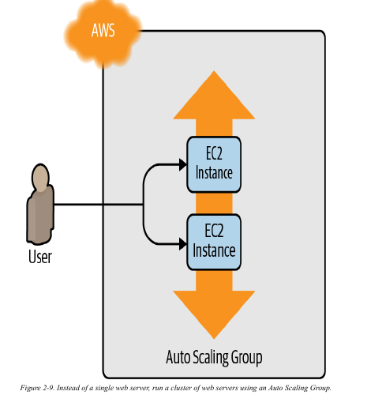
بص يا سيدي، لما بتستخدم aws_instance في الكود، أنت بتقول لـ Terraform "اعملي سيرفر واحد بس دلوقتي". ده resource مباشر بيطلع منتج نهائي واحد وهو سيرفر EC2.
لما بتيجي تستخدم Auto Scaling Group أو ASG، أنت مش عايز تبني سيرفر واحد، أنت عايز تعمل "نظام" يقدر يبني ويمسح سيرفرات كتير أوتوماتيك. النظام ده عشان يشتغل، محتاج يعرف "مواصفات" السيرفر اللي هيبنيه كل مرة.
الـ aws_launch_configuration هو بالظبط "ملف المواصفات" ده. هو مش سيرفر حقيقي، هو مجرد resource في Terraform وظيفته يخزن الإعدادات دي. الـ ASG بياخد ملف المواصفات ده كمرجع، وأي سيرفر جديد بيعمله، بيبنيه طبق الأصل من المواصفات دي.
ليه الكود بيتغير؟
لأنك بتكتب "ملف مواصفات" مش بتعمل "سيرفر" فعلي، فيه شوية فروقات منطقية في الكود:
1. أسامي بتتغير عشان تكون أدق:
الـ
argumentاللي كان اسمهami، بقى اسمهimage_id.السبب: أنت هنا مش بتعمل نسخة (
instance) من الـAMI، أنت بس بتحدد (image_id) اللي هيتكتب في ملف المواصفات عشان يتسخدم بعدين.
الـ
argumentاللي كان اسمهvpc_security_group_ids، بقى اسمهsecurity_groups.السبب: الاسم الجديد أبسط، وبيعبر عن إنك بتحدد "لستة" الـ
security groupsاللي هتتطبق على أي سيرفر يتعمل من المواصفات دي.
2. حاجات بتتشال لأن مكانها مش هنا:
الـ
tagsبتتشال:السبب: الـ
Tagده عامل زي "استيكر" بتلزقه على حاجة عشان تعلمها. مينفعش تلزق استيكر على "ملف مواصفات". الاستيكر بيتلزق على السيرفر الحقيقي نفسه لما يطلع. عشان كده، الـtagsبتتعرف جوه الـASGنفسه، وهو اللي بياخدها ويلزقها على كل سيرفر بيعمله.
user_data_replace_on_changeبتتشال:السبب: الـ
parameterده كان حل لمشكلة فيaws_instanceعشان تجبره يمسح السيرفر ويبني واحد جديد لو غيرت الـuser_data.هنا ده ملوش لازمة، لأن الـ
ASGبطبيعته شغال بمبدأ "امسح وهات جديد". لو أنت عايز تحدث السيرفرات، بتروح تعملlaunch_configurationجديد خالص بمواصفات جديدة، وبعدين تقول للـASG"اشتغل بالملف الجديد ده". الـASGلوحده هيبدأ يمسح السيرفرات القديمة ويعمل جديدة بالمواصفات المحدثة. ففكرة الاستبدال دي هي أساس شغل الـASGأصلًا.
xxxxxxxxxxresource "aws_launch_configuration" "example" { image_id = "ami-0fb653ca2d3203ac1" instance_type = "t2.micro" security_groups = [aws_security_group.instance.id]
user_data = <<-EOF #!/bin/bash echo "Hello, World" > index.xhtml nohup busybox httpd -f -p ${var.server_port} & EOF}دلوقتي تقدر تعمل الـ ASG نفسه باستخدام aws_autoscaling_group resource:
xxxxxxxxxxresource "aws_autoscaling_group" "example" { launch_configuration = aws_launch_configuration.example.name min_size = 2 max_size = 10
tag { key = "Name" value = "terraform-asg-example" propagate_at_launch = true }}
Caution
ذي ما قولت aws_launch_configuration معدش موجود
xxxxxxxxxxresource "aws_autoscaling_group" "example" {desired_capacity = 2min_size = 2max_size = 10vpc_zone_identifier = [aws_subnet.net1.id,aws_subnet.net2.id]
launch_template { id = aws_launch_template.example.id version = "$Latest"}
tag { key = "Name" value = "terraform-asg-example" propagate_at_launch = true}
]}resource "aws_launch_template" "example" {name_prefix = "example-"image_id = "ami-0fb653ca2d3203ac1"instance_type = "t2.micro"
vpc_security_group_ids = [aws_security_group.instance.id]
user_data = base64encode(<<-EOF #!/bin/bash echo "Hello, World" > index.xhtml nohup busybox httpd -f -p ${var.server_port} & EOF)}
لازم يبقوا 2 subnet فى vpc_zone_identifier على الاقل
الكود بتاع الـ Auto Scaling Group (ASG) اللي عملناه بيقوله: "شغّل ما بين سيرفرين و 10 سيرفرات، وابدأ بسيرفرين. أي سيرفر تعمله، الزق عليه tag اسمه terraform-asg-example."
المشكلة: الخناقة بين الـ ASG والـ Launch Configuration
لاحظ إن الـ ASG بيستخدم reference عشان يعرف هو هيشتغل بإنهي launch configuration (ملف المواصفات). يعني كود الـ ASG بيقول
: launch_configuration = aws_launch_configuration.example.name.
هنا بقى بتحصل المشكلة:
طبيعة الـ
Launch Configuration: ملفات المواصفات دي تعتبرimmutable، يعني غير قابلة للتعديل. لو غيرت فيها حرف واحد (مثلًا غيرت نوع السيرفر)،Terraformمبيعرفش "يعدل" الملف القديم. الحل الوحيد عنده هو إنه يمسح القديم ويعمل واحد جديد بالاسم الجديد.الترتيب المنطقي لـ
Terraform: في العادي، لماTerraformبيجي يبدلresource، هو بيمشي بالترتيب ده:أولًا: يمسح الـ
resourceالقديم.ثانيًا: يعمل الـ
resourceالجديد.
الخناقة: تخيل إنك غيرت نوع السيرفر في الـ
launch_configurationبتاعك وشغلتapply.Terraformهيحاول يمشي بالترتيب بتاعه:هيجي يمسح الـ
launch_configurationالقديم.الـ
ASGهيزعق ويقول: "لأ استنى! أنت بتمسح إيه؟ أنا لسه بستخدمlaunch_configurationده وبشاور عليه. مينفعش تمسحه وهو لسه قيد الاستخدام."النتيجة:
Terraformهيقف ويطلعerror، وعمرك ما هتعرف تحدث السيرفرات بتاعتك.
الحل: خاصية lifecycle
عشان نحل الخناقة دي، بنستخدم خاصية متقدمة في Terraform اسمها lifecycle. الخاصية دي بتسمحلك تغير السلوك الافتراضي بتاع Terraform في عمليات الإنشاء والتعديل والمسح.
الحل بتاعنا موجود في setting معين جوه الـ lifecycle اسمه create_before_destroy.
إيه اللي create_before_destroy = true بتعمله؟
ببساطة، هي بتقول لـ Terraform: "لما تيجي تبدل الـ resource ده، اعكس الترتيب بتاعك. متخافش."
فالترتيب الجديد بيبقى كالآتي:
أولًا: يعمل الـ
launch_configurationالجديد بالمواصفات الجديدة.ثانيًا: يروح للكود بتاع الـ
ASGويحدّث الـreferenceاللي فيه، ويخليه يشاور على الـlaunch_configurationالجديد اللي لسه معمولة.ثالثًا (والأهم): دلوقتي الـ
ASGمبقاش بيستخدم الـlaunch_configurationالقديم. بقى حر ومحدش مرتبط بيه.رابعًا:
Terraformيروح يمسح الـlaunch_configurationالقديم وهو مطمن.
بالطريقة دي، عملية التحديث بتم بسلاسة ومن غير أي errors.
بتضيف بلوك الـ lifecycle ده جوه الـ aws_launch_configuration بتاعك بالشكل ده عشان تحل المشكلة:
xxxxxxxxxxresource "aws_launch_configuration" "example" { # ... كل المواصفات بتاعتك ...
lifecycle { create_before_destroy = true }}
xxxxxxxxxxresource "aws_launch_configuration" "example" { image_id = "ami-0fb653ca2d3203ac1" instance_type = "t2.micro" security_groups = [aws_security_group.instance.id]
user_data = <<-EOF #!/bin/bash echo "Hello, World" > index.xhtml nohup busybox httpd -f -p ${var.server_port} & EOF
# launch configuration مع auto scaling group. lifecycle { create_before_destroy = true }}
علشان الـ Auto Scaling Group (ASG) يشتغل، لازم تقوله هيبني السيرفرات بتاعته فين. المكان ده هو الـ subnets. مينفعش تسيبها فاضية.
ليه لازم نحدد كذا subnet؟
علشان كل subnet بيبقى في منطقة (Availability Zone أو AZ) مختلفة. لما توزع سيرفراتك على كذا subnet، لو منطقة كهرباء كاملة فصلت، الخدمة بتاعتك هتفضل شغالة من المناطق التانية.
الطريقة الغلط: إنك تكتب أرقام الـ subnet IDs بإيدك في الكود. لو خدت الكود ده شغلته في account تاني، الأرقام دي هتبقى غلط والكود هيضرب.
الطريقة الصح: نستخدم حاجة في Terraform اسمها Data Source.
إيه هو الـ Data Source؟
الـ Data Source وظيفته إنه يقرأ معلومات موجودة أصلًا من AWS، من غير ما يبني أو يغير أي حاجة. هو أداة "للقراءة فقط". أنت بتستخدمه عشان تسأل AWS عن حاجة، وهو بيرجعلك بالمعلومات دي عشان تستخدمها في الكود بتاعك.
الخطوات عشان نستخدمه
الخطوة الأولى: هنجيب الـ ID بتاع الـ Default VPC
قبل ما نعرف الـ subnets، لازم نعرف الأول هي تبع أنهي VPC. هنستخدم data source عشان نجيب معلومات الـ Default VPC.
xxxxxxxxxxdata "aws_vpc" "default" { default = true}انت بتجيب بيانات vpc اللي هي default=True هو هنا كدا بيعمل filter ومن الطبيعي مفيش الا واحدة بتكون default ممكن تعمل filter على اساسا ثاني ممكن تكون عندك vpc.id او اي tags لسه هنشوف طرق filtertion
خلي باللك زي اللي قبله كل الناتج اتحط فى متغير data.aws_vpc.default
دلوقتي لو عايز استدعي شئ تبع متغير default هعمل كده
xxxxxxxxxxdata.aws_vpc.default.id
الخطوة الثانية: هنجيب كل الـ Subnets اللي جوه الـ VPC دي
بعد ما جبنا ID الـ VPC في الخطوة اللي فاتت، هنستخدمه عشان نجيب كل الـ subnets اللي جواها.
xxxxxxxxxxdata "aws_subnets" "default" { filter { name = "vpc-id" values = [data.aws_vpc.default.id] }}هنا انا حددت كل subnets تمام وحطاطهم فى argument اسمه
data.aws_subnets.defaultوبعدها بعمل filter بحيث بختار بناء على خصية لوحدها وهي
vpc-idهنا يجي السؤال ازاي هو عرف انه هيطلع single object او list ده عن طريق انك ذكرت aws_subnets مش aws_subnet عشان كده هتشوف بعد كده ان الناتج ده list على عكس المثال اللي فات
aws_vpcلما اذكر الجمع يبقى انا عايز list مش واحد
الخطوة الثالثة والأخيرة: ندي اللستة دي للـ ASG
دلوقتي عندنا لستة الـ subnet IDs جاهزة. كل اللي هنعمله إننا نديها للـ ASG.
xxxxxxxxxxresource "aws_autoscaling_group" "example" { # ... باقي الإعدادات زي launch_configuration و min/max_size ... vpc_zone_identifier = data.aws_subnets.default.ids # ... باقي الـ tags ...}الـ
argumentاللي اسمهvpc_zone_identifierهو اللي بياخد لستة الـsubnet IDs.data.aws_subnets.default.ids: هنا بنديله اللستة اللي جبناها من الـdata sourceالتاني.
بالطريقة دي، الكود بتاعك مبقاش معتمد على IDs ثابتة. لو شغلته في أي مكان، هو لوحده هيسأل AWS على الـ VPC والـ subnets الصح ويستخدمهم.
Deploy لـ Load Balancer
لحد دلوقتي، أنت تقدر تعمل deploy للـ ASG بتاعك، بس هتقابلك مشكلة صغيرة: بقى عندك كذا سيرفر، كل واحد فيهم ليه الـ IP address بتاعه، بس أنت في العادي بتبقى عايز تدي للمستخدمين النهائيين بتوعك عنوان واحد بس يستخدموه.
طريقة عشان تحل المشكلة دي هي إنك تعمل deploy لـ load balancer عشان يوزع الـ traffic على السيرفرات بتاعتك، وتدي لكل المستخدمين بتوعك الـ IP (أو بمعنى أدق، اسم الـ DNS) بتاع الـ load balancer.
إنك تعمل load balancer يكون highly available و scalable (يقدر يكبر ويصغر حسب الضغط) ده شغل كتير جدًا. مرة تانية، أنت ممكن تخلي AWS هي اللي تتكفل بالموضوع ده بالنيابة عنك، المرة دي عن طريق استخدام خدمة Amazon's Elastic Load Balancer (ELB).
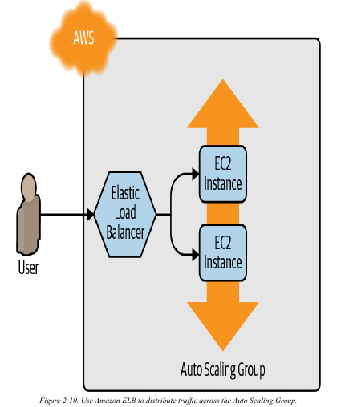\
AWS بتقدم ثلاث أنواع من الـ load balancers:
Application Load Balancer (ALB)ده أنسب اختيار لتوزيع الـtrafficبتاعHTTPوHTTPS. بيشتغل على مستوى الـapplication layer (Layer 7)بتاع نموذجOSI. ده معناه إنه بيفهم الطلبات بتاعة الويب نفسها، زي الـURLsوالـheaders، وبيقدر يوجه الـtrafficبناءً عليها.Network Load Balancer (NLB)ده أنسب اختيار لتوزيع الـtrafficبتاعTCPوUDPوTLS. بيقدر يكبر ويصغر (scale) كاستجابة للضغط أسرع من الـALB(الـNLBمصمم إنه يستحمل عشرات الملايين من الطلبات في الثانية). بيشتغل على مستوى الـtransport layer (Layer 4)بتاع نموذجOSI. ده معناه إنه مش بيبص جوه الطلب، هو بس بيوجه "الباكيتات" بسرعة عالية جدًا.Classic Load Balancer (CLB)ده الـload balancerالقديم (legacy) اللي كان موجود قبل ما الـALBوالـNLBيظهروا. بيقدر يتعامل معtrafficالـHTTP,HTTPS,TCP, وTLSبس بإمكانيات (features) أقل بكتير منهم. بيشتغل على المستويينapplication layer (L7)وtransport layer (L4)من نموذجOSI. نصيحة: متستخدموش في أي حاجة جديدة.
معظم التطبيقات دلوقتي المفروض تستخدم يا إما ALB يا إما NLB. وبما إن مثال الـ web server البسيط اللي بنشتغل عليه هو تطبيق HTTP ومحتاجش أداء خرافي، فالـ ALB هو أنسب اختيار ليه.
الـ ALB بيتكون من كذا جزء أساسي:
Listener: ده الجزء اللي بيستقبل الـtraffic. وظيفته إنه "listen" علىport(زي 80) وبروتوكول (زيHTTP) معين.Listener rule: دي "قواعد المرور" بتاعة الـListener. بتاخد الطلبات اللي بتيجي، ولو لقت طلب بيطابق شرط معين (زي إنه رايح علىpathمعين زي/images، أو جاي لـhostnameمعين زيapi.example.com)، بتوجهه لـtarget groupمحددة.Target groups: دي المجموعة اللي فيها السيرفرات بتاعتك اللي هتستقبل الـtrafficفي الآخر. الـtarget groupكمان مسؤول عن إنه يعملhealth checksعلى السيرفرات دي، وميبعتش أيtrafficغير للسيرفرات السليمة (healthy nodes) بس.
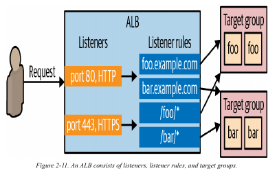
###
أول خطوة إننا نكريت الـ ALB نفسه باستخدام الـ aws_lb resource:
xxxxxxxxxxresource "aws_lb" "example" { name = "terraform-asg-example" load_balancer_type = "application" subnets = data.aws_subnets.default.ids}خد بالك إن الـ parameter بتاع الـ subnets ده بيظبط الـ load balancer علشان يستخدم كل الـ subnets اللي موجودة في الـ Default VPC بتاعك، وده عن طريق استخدام الـ aws_subnets data source.
الـ AWS load balancers مش بيتكون من server واحد، لأ ده بيبقى كذا server ممكن يشتغلوا في subnets منفصلة (يعني ممكن في datacenters مختلفة خالص). AWS بتزود وتنقص عدد الـ servers بتاعت الـ load balancer دي أوتوماتيك على حسب الـ traffic اللي جاي عليها، وبتظبط موضوع الـ failover لو واحد من الـ servers دي وقع، فإنت كده بتاخد scalability و
high availability كا out of the box.
Tip
"Out of the box" معناها إن الميزة دي موجودة وجاهزة للاستخدام من غير ما تحتاج تعمل أي إعدادات إضافية أو مجهود منك. يعني هي بتيجي مع المنتج أو الخدمة دي بشكل أساسي ومدمج.
دلوقتي بقى، هنعرف listener للـ ALB ده باستخدام الـ aws_lb_listener resource:
xxxxxxxxxxresource "aws_lb_listener" "http" { load_balancer_arn = aws_lb.example.arn port = 80 protocol = "HTTP" # By default, return a simple 404 page default_action { type = "fixed-response" fixed_response { content_type = "text/plain" message_body = "404: page not found" status_code = 404 } }}الـ listener ده بيظبط الـ ALB إنه يسمع على الـ HTTP port الأساسي، اللي هو port 80، ويستخدم HTTP كـ protocol، ويبعت صفحة 404 بسيطة كـ default response لأي requests مش ماشية مع أي listener rules.
خد بالك إن by default، كل الـ AWS resources، ومن ضمنهم الـ ALBs، مش بتسمح بأي traffic يخش أو يخرج منها، عشان كده محتاجين نـ create ألـ security group جديد مخصوص للـ ALB. الـ security group ده لازم يسمع الـ incoming requests على port 80 عشان تعرف تاكسس الـ load balancer عن طريق الـ HTTP، ولازم يسمع كمان الـ outgoing requests على كل الـ ports عشان الـ load balancer يقدر يعمل health checks:
xxxxxxxxxxresource "aws_security_group" "alb" { name = "terraform-example-alb" # Allow inbound HTTP requests ingress { from_port = 80 to_port = 80 protocol = "tcp" cidr_blocks = ["0.0.0.0/0"] } # Allow all outbound requests egress { from_port = 0 to_port = 0 protocol = "-1" cidr_blocks = ["0.0.0.0/0"] }}هتحتاج تقول للـ aws_lb resource إنه يستخدم الـ security group ده عن طريق الـ security_groups argument:
هترجع للـ resource بتاع الـ aws_lb اللي اسمه example، وهتضيف السطر ده:
xxxxxxxxxxresource "aws_lb" "example" { name = "terraform-asg-example" load_balancer_type = "application" subnets = data.aws_subnets.default.ids security_groups = [aws_security_group.alb.id] # السطر اللي ضفناه}الخطوة اللي بعدها، محتاج تـ create للـ target group للـ ASG بتاعك باستخدام الـ aws_lb_target_group resource:
xxxxxxxxxxresource "aws_lb_target_group" "asg" { name = "terraform-asg-example" port = var.server_port protocol = "HTTP" vpc_id = data.aws_vpc.default.id health_check { path = "/" protocol = "HTTP" matcher = "200" interval = 15 timeout = 3 healthy_threshold = 2 unhealthy_threshold = 2 }}
الـ target group ده هيعمل health check للـ Instances بتاعتك عن طريق إنه هيبعت HTTP request كل شوية لكل Instance، وهيعتبر الـ Instance ده healthy بس لو الـ Instance رجّع response ماشي مع الـ matcher اللي إنت ظابطه (يعني مثلاً ممكن تظبط الـ matcher إنه يدور على 200 OK response). لو الـ Instance مفشلش يرد، يمكن عشان الـ Instance ده وقع أو بقى عليه load كتير، ساعتها هياخد علامة unhealthy، والـ target group هيوقف أوتوماتيك إنه يبعتله traffic عشان يقلل أي مشاكل تحصل للي بيستخدموا الـ website بتاعك.
Important
vpc_id = data.aws_vpc.default.id بيحدد انه تبع vpc ولكن مش بيحدد انما ملوش دعوة هو هيوجه requests فين
طب الـ target group ده هيعرف منين يبعت الـ requests لأنهي EC2 Instances بالظبط؟ ممكن تعمل attach لـ static list من الـ EC2 Instances للـ target group ده باستخدام الـ aws_lb_target_group_attachment resource، بس مع الـ ASG، الـ Instances ممكن تقوم أو تتقفل في أي وقت، فـ static list مش هينفع. بدل كده، ممكن تستفيد من الـ integration القوي جداً بين الـ ASG والـ ALB. ارجع للـ aws_autoscaling_group resource، وظبط الـ argument اللي اسمه target_group_arns عشان يشاور على الـ target group الجديد بتاعك:
Note
ممكن تحط اكثر من target group عادي جدا
xxxxxxxxxxresource "aws_autoscaling_group" "example" { launch_configuration = aws_launch_configuration.example.name vpc_zone_identifier = data.aws_subnets.default.ids target_group_arns = [aws_lb_target_group.asg.arn] health_check_type = "ELB" min_size = 2 max_size = 10 tag { key = "Name" value = "terraform-asg-example" propagate_at_launch = true }}لازم كمان تعمل update للـ health_check_type تخليه "ELB". الـ health_check_type الـ default هو "EC2"، وده health check بسيط جداً بيعتبر الـ Instance unhealthy بس لو الـ AWS hypervisor قال إن الـ VM وقع خالص أو مش واصل. الـ health check بتاع الـ "ELB" أقوى، لأنه بيدي تعليمات للـ ASG إنه يستخدم الـ health check بتاع الـ target group عشان يعرف الـ Instance ده healthy ولا لأ، ويبدل الـ Instances أوتوماتيك لو الـ target group قال إنهم unhealthy. كده الـ Instances هتتبدل مش بس لو وقعت خالص، كمان لو بطلت ترد على الـ requests مثلاً عشان الـ memory خلصت فيها أو process مهم وقع.
أخيراً، جه وقت إننا نربط كل الحاجات دي ببعضها عن طريق إننا نـ create لـ listener rules باستخدام الـ aws_lb_listener_rule resource:
xxxxxxxxxxresource "aws_lb_listener_rule" "asg" { listener_arn = aws_lb_listener.http.arn priority = 100 condition { path_pattern { values = ["*"] } } action { type = "forward" target_group_arn = aws_lb_target_group.asg.arn }}الـ code اللي فوق ده بيضيف listener rule بيبعت الـ requests اللي ماشية مع أي path للـ target group اللي فيه الـ ASG بتاعك.
في آخر حاجة محتاج تعملها قبل ما تعمل deploy للـ load balancer—هتبدل الـ output القديم بتاع الـ public_ip بتاع الـ EC2 Instance الواحد اللي كان عندك قبل كده بـ output بيطلع الـ DNS name بتاع الـ ALB:
xxxxxxxxxxoutput "alb_dns_name" { value = aws_lb.example.dns_name description = "The domain name of the load balancer"}اعمل run لـ terraform apply، واقرأ الـ plan output. هتلاقي إن الـ EC2 Instance الواحد بتاعك الأصلي بيتمسح، وبداله، Terraform هيكريتلك launch configuration و ASG و ALB و security group. لو الـ plan شكله تمام، اكتب yes وادوس Enter. لما الـ apply يخلص، المفروض تشوف الـ alb_dns_name output:
xxxxxxxxxxOutputs:alb_dns_name = "terraform-asg-example-123.us-east-2.elb.amazonaws.com"
خد الـ URL ده كوبي. هياخد كام دقيقة كده لحد ما الـ Instances تقوم وتظهر healthy في الـ ALB. في الوقت ده، ممكن تشوف إيه اللي إنت عملتله deploy. افتح الـ ASG section في الـ EC2 console، وهتلاقي إن الـ ASG اتعمل، زي ما باين في Figure 2-12.
متنساش تعمل destroy
xxxxxxxxxxterraform destroy
Tip
**إيه هي
-auto-approve؟
لما بتشغل أمر terraform apply في العادي، Terraform بيعمل إيه؟
بيحسب Plan: بيشوف إيه اللي هيتعمل، أو هيتعدل، أو هيتمسح.
يعرض عليك Plan: بيوريك كل التغييرات اللي ناوي يعملها بالتفصيل.
بيسألك :
xxxxxxxxxxDo you want to perform these actions?Terraform will perform the actions described above.Only 'yes' will be accepted to approve.Enter a value:
Terraform بيوقف كل حاجة وبيستناك أنت بنفسك تكتب كلمة yes وتدوس Enter عشان يتأكد إنك موافق على الـPlane دي.
ليه بيعمل كده؟
دي خطوة أمان مهمة جدًا عشان متعملش apply لتغيير خطير بالصدفة. هو بيجبرك تراجع الـPlane بعينك وتدي موافقة صريحة.
طب إيه المشكلة؟
الطريقة دي ممتازة لما تكون أنت اللي بتشغل الأمر بإيدك من على جهازك. لكن تخيل إن Terraform بيشتغل في سيناريو مؤتمت بالكامل، زي:
CI/CD pipeline(زيJenkins,GitLab CI,GitHub Actions): الـpipelineده عبارة عنserverبيشغل الأوامر لوحده لما بتعملpushللكود. مفيش بني آدم قاعد قدام الشاشة عشان يكتبyes!Script: أنت عاملbash scriptبيعملdeployلمجموعة حاجات ورا بعض.
في الحالات دي، الـ pipeline أو الـ script هيشتغل، وهيوصل لمرحلة سؤال yes، وهيفضل واقف ومستني رد... إلى الأبد. والعملية كلها هتفشل بسبب timeout.
الحل: -auto-approve
الـ flag اللي اسمه -auto-approve هو ببساطة طريقة تقول بيها لـ Terraform:
"اسمع، أنا واثق في الـPlane اللي هتطلع. نفذها على طول من غير ما تسألني."
لما بتشغل الأمر بالشكل ده:
xxxxxxxxxxterraform apply -auto-approveTerraform هيعمل نفس الخطوات، بس هيتخطى خطوة السؤال:
بيحسب
Plan.يعرض عليك الـPlan (في الـ
logبتاع الـpipeline).ينفذها فورًا كأنه فيه حد كتبله
yesأوتوماتيك.
تحذير مهم جدًا
لا تستخدم
-auto-approveأبدًا وأنت شغال على جهازك (إلا لو عارف 100% أنت بتعمل إيه). دي ممكن تسبب كوارث لو أنت مش مراجع الـplanكويس. ممكن تمسحproduction databaseبالغلط!استخدمها فقط في البيئات اللي حصل له automation اللي فيها خطوات
reviewوapprovalقبل ما الـpipelineيوصل لمرحلة الـapply. الـbest practiceفي الـCI/CDهو إن الـpipelineيعملterraform planالأول، ويعرض الـPlane دي على حد من الفريق عشان يعملهاapprove(مثلًا عن طريقpull request review)، وبعد ما الـapprovalيتم، الـpipelineيكمل ويشغلterraform apply -auto-approve.
Important
أمر plan مش مجرد "بروفة"... ده "عقد اتفاق"!
إحنا اتعاملنا مع أمر terraform plan على إنه طريقة سريعة نشوف بيها تيرافورم هيعمل إيه. بس في الشغل الحقيقي، الأمر ده أهميته أكبر من كده بكتير. فكر فيه كأنه official contract بينك وبين تيرافورم.
إزاي تحول البروفة لـ official contract؟
أنت ممكن تحفظ الـ plan دي في ملف، وبعدين تقول لـ Terraform ينفذ الملف ده بالحرف، من غير ما يفكر تاني.
الخطوة الأولى: اعمل خطة واحفظها
xxxxxxxxxxterraform plan -out="my-plan-file"الأمر ده بيعمل كل حاجة زي
planالعادي، بس بدل ما يعرض النتيجة على الشاشة بس، بيحفظها في ملف اسمهmy-plan-file. الملف ده متشفّر ومينفعش تعدله، وهو بيحتوي على كل التغييرات اللي تيرافورم قرر يعملها بالظبط.الخطوة الثانية: نفذ العقد
xxxxxxxxxxterraform apply "my-plan-file"لما بتشغل
applyوتديله اسم الملف، تيرافورم مش بيعملplanمن جديد. هو بيفتح "contract" اللي اتفقتوا عليه، وينفذه زي ما هو بالمللي، ومش هيسألك حتى تكتبyesلأنه بيعتبر إنك وافقت خلاص لما حفظت الخطة.
طب إيه فايدة اللفة دي؟
دي أساس الشغل في الفرق الكبيرة والـ automation pipelines!
ضمان الثبات (Consistency): تخيل إنك عملت
planالساعة 9 الصبح، والدنيا كانت تمام. بس مجتش فرصة تعملapplyإلا الساعة 11. في الساعتين دول، ممكن يكون زميلك غير حاجة في الـinfrastructureمن غير ما تعرف. لو شغلتapplyعادي، النتيجة اللي هتطلع هتكون مختلفة عن الـplanاللي شفتها الصبح. لكن لو كنت حافظ الـplanفي ملف،Terraformهينفذ plan الأصلية، ولو لقى إن الواقع اتغير، هيديكerrorويقولك "استنى، contract ده مبقاش ينفع، الواقع اتغير! او state القديمة اللي كان مبني عليها اتغيرت".الـ
Code Review: في الشغل، الممارسة السليمة هي إنك لما تعمل تغيير، الـCI/CD pipelineبتاعك بيشغلterraform plan -out="plan.file"أوتوماتيك، وبعدين يعرض عليك محتوى الخطة دي عشان تراجعها أنت وفريقك. لو كله تمام ووافقتوا عليها، الـpipelineبيكمل وينفذ نفس الملف ده بأمرterraform apply "plan.file". كده أنتم كلكم بتبقوا متأكدين 100% إن اللي اتنفذ هو هو بالظبط اللي اتراجِع واتوافق عليه.
###
Tip
خلي الكود بتاعك نضيف ومنظم (لسه هنكلم فيها بالتفصيل)
لحد دلوقتي، إحنا بنكتب كل حاجة في ملف main.tf واحد. وده شغال وزي الفل في الأمثلة الصغيرة. لكن لما المشروع يكبر، الملف ده هيبقى زحمة جدًا وصعب تقراه.
Terraform ذكي كفاية إنه بيقرأ كل ملفات الـ .tf اللي في نفس الفولدر كأنهم ملف واحد كبير. فإحنا ممكن نستغل الميزة دي ونقسم الكود بتاعنا على كذا ملف عشان يبقى أنضف وأسهل في الصيانة.
دي تقسيمة كويسة تبدأ بيها:
main.tf: خليه للـresourcesالأساسية بتاعتك (زي الـEC2 instances,ASG,Load Balancer). ده قلب المشروع.variables.tf: حط فيه كل الـinput variablesبتاعتك. أي حاجة بتبدأ بـvariable "..."مكانها هنا.outputs.tf: حط فيه كل الـoutput variablesبتاعتك. أي حاجة بتبدأ بـoutput "..."مكانها هنا.providers.tf: حط فيه الـprovider configuration(زي بلوكprovider "aws" { ... }).data.tf: حط فيه أيdata sourcesبتستخدمها (زيdata "aws_vpc" ...).
لما تعمل كده، أي حد جديد هيدخل على المشروع هيفهم على طول يروح يبص فين لو عايز يعرف إيه هي المتغيرات المتاحة أو إيه هي المخرجات اللي الكود بيطلعها. ده بيخلي حياتك وحياة فريقك أسهل بكتير.
####
Note
متتخضش لما تشوف كلام أحمر!
مفيش مهندس في الدنيا الكود بتاعه بيشتغل من أول مرة. طبيعي جدًا إنك تغلط وتشوف error لونه أحمر بيملى الشاشة. الأهم من إنك متغلطش، هو إنك تعرف تصلح الغلط إزاي.
لما تيرافورم يزعقلك، اعمل الخطوات دي بالترتيب:
خد نفس عميق واقرأ الـ
Error:Terraformفي معظم الوقت بيقولك المشكلة فين بالظبط. بص على الرسالة كويس، هتلاقيه كاتبلك:اسم الملف ورقم السطر اللي فيه المشكلة.
شرح للغلطة (مثلًا: "اسم الـ
argumentده غلط"، أو "القيمة دي مشstring").اقرأ الرسالة من تحت لفوق، غالبًا أصل المشكلة بيكون في آخر كام سطر.
استخدم أمر
validate: قبل ما تعملplanأوapply، ممكن تشغل الأمر ده:xxxxxxxxxxterraform validateالأمر ده مش بيعمل أي حاجة على
AWS، هو بس بيبص على الكود بتاعك ويتأكد إن مفيش أخطاء إملائية أو مشاكل في الـsyntax. ده زيspell checkerللكود بتاعك.ارجع للـ
Documentation(صاحبك الصدوق): زي ما الكاتب قال، الـdocsهي أهم أداة عندك. لو الـerrorبيقولك إن فيه مشكلة فيresourceاسمهaws_lb_target_group، روح على جوجل واكتب "terraform aws_lb_target_group". أول نتيجة هتكون الصفحة الرسمية بتاعته. قارن الكود بتاعك بالمثال اللي في الصفحة، غالبًا هتلاقي إنك ناسيargumentمهم أو كاتبه غلط.
الغلطات جزء من عملية التعلم. كل error بتصلحه، بيخليك تفهم Terraform أكتر.
####
Tip
تيرافورم عنده
Template Engineداخلي بيخلي الكود بتاعك برنس!خلينا نرجع بالزمن شوية للـ
User Data scriptبتاعنا. كان شكله كده:xxxxxxxxxxuser_data = <<-EOF#!/bin/bashecho "Hello, World" > index.xhtmlnohup busybox httpd -f -p ${var.server_port} &EOFده جميل وبسيط. بس في الشغل الحقيقي، الـ
scriptبتاعك مش هيبقى سطرين. تخيل إنك محتاج تعمل سيرفر بيعمل الحاجات دي أول ما يقوم:
يعمل
updateللـpackagesبتاعته.يسطب
Nginx(ويب سيرفر حقيقي).يسطب
Git.يعمل
cloneللكود بتاع الأبليكيشن بتاعك منGitHub.يكتب ملف
configurationمخصوص للأبليكيشن ده، والملف ده محتاج يعرف عنوان الـdatabaseاللي هيتكلم معاها.لو جينا نكتب ده جوه ملف الـ
.tf، هيبقى شكله كارثي كده:xxxxxxxxxx# !! مثال للكود الوحش اللي مش عايزين نكتبه !!user_data = <<-EOF#!/bin/bash# Update and install dependenciesapt-get update -yapt-get install -y nginx git# Clone the application codegit clone https://github.com/my-company/my-awesome-app.git /var/www/html# Create a config file for the appecho "DATABASE_HOST=${var.db_address}" > /var/www/html/config.envecho "DATABASE_PORT=${var.db_port}" >> /var/www/html/config.env# Restart Nginx to apply changessystemctl restart nginxEOFإيه المشاكل اللي هنا؟
قراية الكود بقت صعبة جدًا: ملف الـ
Terraformبتاعك بقى عبارة عن كوكتيل من لغتين:HCLوBash.مفيش
Syntax Highlighting: الـtext editorبتاعك هيتلخبط، ومش هيعرف يلونلك كود الـBashصح، وده بيصعّب اكتشاف الأخطاء.إعادة الاستخدام مستحيلة: لو عايز تستخدم نفس الـ
scriptده في حتة تانية، لازم تعملcopy-pasteللكود ده كله.باختصار، أنت كده بتخلط "إيه هي البنية التحتية" (كود تيرافورم) مع "إزاي أجهز السيرفر" (كود الباش)، وده بيعمل فوضى.
الحل: افصل العالمين!
Terraformبيديلك حل عبقري: خلي كل لغة في ملفها الخاص والمحترم. خلي كودTerraformفي ملفات.tf، وخلي كودBashفي ملف.sh.إزاي هنعمل كده؟ عن طريق استخدام
functionاسمهاtemplatefile. الدالة دي بتشغلTemplate Engineداخلي، وظيفته إنه يقرأ ملف، ويدور على أي متغيرات جواه، ويبدلها بالقيم اللي أنت بتديها لها.الخطوات بسيطة:
1. اعمل ملف الـ "Template" بتاعك: اعمل ملف جديد اسمه
setup-webserver.sh. الملف ده هيبقى فيه كود الـBashبتاعك نضيف وواضح.xxxxxxxxxxapt-get update -yapt-get install -y nginx# هنا بنعمل placeholder اسمه "greeting_message"echo "<h1>${greeting_message}</h1>" > /var/www/html/index.htmlsystemctl restart nginxلاحظ المتغير
"${greeting_message}". ده مش كود تيرافورم، ده مجرد "مكان محجوز" أوplaceholderجوه الـtemplateبتاعنا.2. في ملف
main.tf، استدعي الـtemplateده: بدل كل الزحمة اللي فاتت، الـuser_dataبتاعك هيبقى سطر واحد شيك جدًا:xxxxxxxxxxresource "aws_instance" "web_server" {ami = "ami-..."instance_type = "t2.micro"user_data = templatefile("${path.module}/setup-webserver.sh", {greeting_message = "Hello from our smart template!"})}هتشوف لسه قصة path.module دي الفصل اللي بعد الجي بس لو ضروري دلوقتي وانت مش بتستخدم module فى دي directory اللي فيه عليها main.tf
شفت إيه اللي حصل؟
templatefile(...)هي الدالة اللي بتشغل الـTemplate Engine.الجزء الأول
("${path.module}/setup-webserver.sh")بيحدد مكان ملف الـtemplate.الجزء التاني
({ ... })هو الـmapاللي فيه عملية التبديل. السطرgreeting_message = "..."معناه: "روح جوه الـtemplate، دور على أي حاجة اسمها${greeting_message}، وشيلها وحط مكانها الجملة دي".ليه دي طريقة أحسن بمليون مرة؟
النظافة والتنظيم: الكود بقى مقروء. ملفات الـ
TerraformبتتكلمTerraform، وملفات الـBashبتتكلمBash.الصيانة: لو عايز تعدل في الـ
script، هتروح تعدل في ملف.shواحد بس.إعادة الاستخدام: تقدر تستخدم نفس ملف
setup-webserver.shفي 10 أماكن مختلفة، وكل مرة تبعتلهgreeting_messageمختلفة، وهو هيشتغل زي الفل.التعاون: ممكن تدي ملف الـ
.shلواحد متخصص في الـLinuxوالـscriptingعشان يظبطهولك، وهو مش محتاج يفهم أي حاجة عنTerraform.استخدام الـ
Template Engineبينقل كودك من مجرد أوامر ثابتة، لكود ديناميكي وذكي و reusable. دي واحدة من أهم المهارات اللي هتفرق معاك جدًا وأنت بتبنيinfrastructureمعقدة.فى function اسمها file ولكن دي بتنقل بس مش بتعمل اكثر من كده
Caution
متنساش تطفي النور وأنت خارج!
الـ AWS Free Tier عظيمة، بس ليها حدود. والأمثلة دي لو سبتها شغالة أيام، ممكن تبدأ تسحب من فلوسك الحقيقية. عشان كده، لازم تتعود على عادة مهمة جدًا:
لما تخلص تجربة، دمر كل حاجة!
الأمر ده هو صديق محفظتك:
xxxxxxxxxxterraform destroyالأمر ده هيمسح كل الـ resources اللي Terraform عملها في المشروع ده. شغله دايمًا بعد ما تخلص مذاكرة أو تجربة عشان تضمن إن مفيش فواتير مفاجئة هتجيلك آخر الشهر.
نصيحة للمحترفين: روح على الـ AWS Console، وابحث عن خدمة اسمها Billing، ومن هناك تقدر تعمل حاجة اسمها Billing Alarm. ده منبه تقدر تظبطه إنه يبعتلك إيميل لو فاتورتك عدت مبلغ معين (مثلًا 5 دولار). دي شبكة أمان ممتازة عشان تحمي نفسك من أي تكاليف مش متوقعة.